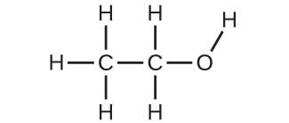

第2章 原子、分子、およびイオン
図2.1 | 呼気中の分子を分析することで貴重な情報が得られ、病気の早期診断や有害物質への環境中での曝露の検出につながります。(credit: modification of work by Paul Flowers)
この章の概要
2.1 原子論における初期の考え方
2.2 原子論の進化
2.3 原子構造と記号
2.4 化学式
2.5 周期表
2.6 分子化合物とイオン化合物
2.7 化学的命名法
はじめに
あなたの全体的な健康状態や病気になりやすいかどうかは、あなたの遺伝的構成と環境への曝露との間の複雑な相互作用に依存しており、その結果を予測することは困難です。バイオマーカー(ある生物の病気や生理的状態を示す物質)を早期に検出することで、症状が重篤化したり、元に戻らない状態になったりする前に診断や治療が可能になる可能性があります。最近の研究では、あなたの呼気に含まれる分子が、環境汚染物質への最近の暴露や、喘息から肺がんに至るまでの病理学的状態についてのバイオマーカーとなる可能性があることが明らかにされています。科学者たちは、患者の呼気中に含まれる特定の分子の量と同一性(アイデンティティー)に基づいて、特定の疾患を診断するために使用できるバイオマーカーの「指紋」の開発に取り組んでいます。この目標の根底にある本質的な概念は、分子の同一性であり、これは分子に含まれる原子の数と種類、およびそれらがどのように結合しているかによって決定されます。この章では、分子の同一性の概念の中心となるものを含め、物質の構成に関連する基本的な化学原理のいくつかを説明します。
2.1 原子論における初期の考え方
この節が終わるまでに、あなたは次のことができるようになります:
•ドルトンの原子論の原則を述べる
•ドルトンの原子論の原則を用いて、定比例の法則と倍数比例の法則を説明する
物質の基本的な構造についての最古の記録された議論は、古代ギリシャの哲学者、つまり当時の科学者たちから来ています。紀元前5世紀に、レウキッポスとデモクリトスは、すべての物質が小さな、有限の粒子で構成されていると主張し、彼らはそれらのことをアトモス(「不可分」を意味するギリシャ語の単語に由来する用語)と呼びました。彼らはアトモスを、形や大きさの異なる動く粒子であり、互いに結合することができると考えていました。その後、アリストテレスや他の人たちは、物質は火、土、空気、水の4つの「元素」のさまざまな組み合わせから成り立っており、無限に分割できるという結論に達しました。興味深いことに、これらの哲学者たちは、原子や「元素」について哲学的な概念として考えており、自分たちの考え方をテストするために実験を行うことは決して考えていなかったようです。
イングランドの学校教師ジョン・ドルトンが、物質の振る舞いは原子論を用いて説明することができるという仮説を立てて化学に革命を起こすまで、アリストテレス的な物質の構成の観点は2000年以上も主流のままでした。物質の微視的な特徴についてのドルトンの仮説は1807年に初めて発表され、その多くは現代の原子論においても有効なままです。ここでは、ドルトンの原子論の原則を紹介します。
物質は原子と呼ばれる非常に小さな粒子で構成されています。原子とは、化学的変化に参加できる元素の最小単位です。
ある元素は、1種類の原子だけで構成されており、原子はその元素に特徴的な質量を持ち、その元素のすべての原子が同じ質量を持ちます(図2.2)。元素の巨視的なサンプルには、信じられないほど多くの数の原子が含まれており、すべての原子が同一の化学的性質を持っています。
図2.2 | 1982年以前の銅ペニー(左側)には、約3×10²²個の銅原子が含まれています(数十個は右側の茶色の球体で表されています)が、それぞれが同じ化学的性質を持っています。(credit: modification of work by “slgckgc”/Flickr)
ある元素の原子は、他のすべての元素の原子とは性質が異なります。
化合物は、2つかそれ以上の元素の原子が小さな整数比で結合してできています。ある所与の化合物では、それぞれの元素の原子の数は常に同じ比率で存在しています(図2.3)。
図2.3 | 酸化銅(II)は粉末状の黒い化合物で、銅(茶色の球体)と酸素(赤色の球体)という2種類の原子が1:1の比率で結合してできています。(credit: modification of work by “Chemicalinterest”/Wikimedia Commons)
- 原子は化学的変化の間に作られたり、破壊されたりすることはなく、その代わりに、変化前に存在していた物質とは異なる物質を生み出すために再配列されます(図2.4)。
図2.4 | 銅(光沢のある赤褐色の固体、ここでは茶色の球体として示されています)と酸素(無色透明の気体、ここでは赤い球体として示されています)という元素が反応すると、それらの原子が再配列して、銅と酸素を含む化合物(粉末状の黒い固体)を形成します。(credit copper: modification of work by http://images-of-elements.com/copper.php)
ドルトンの原子論は、あなたがこれまで学んできたような物質の多くの巨視的な性質を微視的に説明してくれます。たとえば、もし銅のような元素が1種類の原子だけで構成されている場合、それはより単純な物質、つまり、より少ない種類の原子で構成された物質へと分解することはできません。また、もし化学的変化の際に原子が作られたり破壊されたりすることがないならば、物質がある種類から別の種類に変化するときに存在する物質の総質量は一定のまま保持されます(物質の保存の法則)。
例題2.1 ドルトンの原子論をテストする
以下の図では、緑色の球体はある元素の原子を表しています。紫色の球体は別の元素の原子を表しています。もし球体が接触している場合、それらは化合物の単一の単位の一部です。これらの記号で表される以下の化学的変化は、ドルトンの原子論の考え方のいずれかに違反していますか?違反しているとしたら、どれでしょうか?
解法
初めの物質は、2つの緑色の球体と2つの紫色の球体から構成されています。生成物は、1つの緑色の球体と1つの紫色の球体だけで構成されています。これは、原子が化学的変化の間に作られたり破壊されたりすることはなく、単に再分配されるだけであるというドルトンの原則に反しています。(この場合、原子は破壊されたように見えます)。
学習内容の確認
以下の図では、緑色の球体はある元素の原子を表しています。紫色の球体は別の元素の原子を表しています。もし球体が接触している場合、それらは化合物の単一の単位の一部です。これらの記号で表される以下の化学的変化は、ドルトンの原子論の考え方のいずれかに違反していますか?違反しているとしたら、どれでしょうか?

解答:初めの物質は4つの緑色の球体と2つの紫色の球体から構成されています。生成物は4つの緑色の球体と2つの紫色の球体から構成されています。これはドルトンの原則のどれにも違反していません:原子は作られることも破壊されることもなく、小さな整数比で再分配されています。
ドルトンはフランスの化学者ジョゼフ・プルーストの実験を知っていました。プルーストは純粋な化合物のすべての試料が同じ元素を同じ質量比で含むことを実証しました。この言明は、定比例の法則または一定の組成の法則として知られています。ある所与の化合物に含まれる元素の原子の数が常に同じ比率で存在するという示唆は、これらの観察結果と一致しています。たとえば、イソオクタン(ガソリンの成分であり、オクタン価システムで使用される基準の1つ)のさまざまな試料を分析すると、表2.1に示されるように、炭素と水素の質量比が5.33:1であることがわかります。
表2.1
特定の化合物のすべての試料は同じ質量比を持っていますが、一般的にはその逆は真ではないことは注目に値します。つまり、同じ質量比を持つ試料は、必ずしも同じ物質とは限りません。たとえば、イソオクタン以外の化合物でも、炭素と水素の質量比が5.33:1.00の化合物はたくさんあります。
ドルトンはまた、プルーストのデータや自身の実験結果を用いて、もう1つの興味深い法則を作り上げました。倍数比例の法則とは、2つの元素が反応して複数の化合物を形成するとき、一方の元素の一定の質量は他方の元素の質量と小さい整数の比率で反応するというものです。たとえば、銅と塩素は、銅1gに対して塩素0.558gの質量比で緑色の結晶性固体を形成することもあれば、銅1gに対して塩素1.116gの質量比で茶色の結晶性固体を形成することもあります。これらの比率は、それだけでは特に興味深いものではないし、有益な情報でもないように思われるかもしれません。しかしながら、もし私たちがこれらの比率の比率をとってみると、有用で、もしかしたら驚くような結果が得られます:小さな整数比です。
\[ \rm\frac{\frac{1.116\ g\ (Cl)}{1\ g\ (Cu)}}{\frac{0.558\ g\ (Cl)}{1\ g\ (Cu)}}=\frac{2}{1} \]
この2対1の比率は、茶色の化合物の中における銅の量に対する塩素の量が、緑色の化合物の中における銅の量に対する塩素の量の2倍であることを意味します。
これは原子論で説明できます。もし茶色の化合物の中における銅と塩素の比が銅原子1個に対して塩素原子2個であり、緑色の化合物の中における比が銅原子1個に対して塩素原子1個であるとすると、塩素原子の割合(したがって、それぞれの質量の割合)は2対1になります(図2.5)。
図2.5 | 銅を茶色の球体、塩素を緑色の球体で表した(a)の銅-塩素化合物に比べて、(b)の銅-塩素化合物は銅原子1個あたりの塩素原子の数が2倍になっています。(credit a: modification of work by “Benjah-bmm27”/Wikimedia Commons; credit b: modification of work by “Walkerma”/Wikimedia Commons)
例題2.2 定比例の法則と倍数比例の法則
化合物A(無色透明の気体)の試料を分析したところ、炭素4.27gと酸素5.69gを含むことがわかりました。化合物B(同じく無色透明の気体)の試料を分析したところ、炭素5.19g、酸素13.84gを含むことがわかりました。これらのデータは、定比例の法則の例でしょうか、倍数比例の法則の例でしょうか、それともどちらでもないでしょうか?これらのデータは物質Aと物質Bについて何を教えてくれますか?
解法
化合物Aにおいて、炭素と酸素の質量比は:
\[ \rm\frac{1.33\ g\ (O)}{1\ g\ (C)} \]
化合物Bにおいて、炭素と酸素の質量比は:
\[ \rm\frac{2.67\ g\ (O)}{1\ g\ (C)} \]
これらの比率の比率は:
\[ \rm\frac{\frac{1.33\ g\ (O)}{1\ g\ (C)}}{\frac{2.67\ g\ (O)}{1\ g\ (C)}}=\frac{1}{2} \]
これは倍数比例の法則を支持します。これは、AとBが異なる化合物であることを意味し、AはBと比べて炭素の量あたりの酸素の量が2分の1である(または酸素の量あたりの炭素の量が2倍である)ことを意味します。この関係性に当てはまるであろう可能な化合物のペアには、A = COおよびB = CO₂があります。
学習内容の確認
化合物X(無色透明の可燃性液体であり、顕著な匂いがあります)の試料を分析したところ、炭素14.13gと水素2.96gを含むことがわかりました。化合物Y(無色透明の可燃性液体であり、Xの匂いとは少し違う顕著な匂いがあります)の試料を分析したところ、炭素19.91g、水素3.34gを含むことがわかりました。これらのデータは、定比例の法則の例でしょうか、倍数比例の法則の例でしょうか、それともどちらでもないでしょうか?これらのデータは物質Xと物質Yについて何を教えてくれますか?
解答:化合物Xにおいて、炭素と水素の質量比は:
\[ \rm\frac{14.13\ g\ (C)}{2.96\ g\ (H)} \]
化合物Yにおいて、炭素と水素の質量比は:
\[ \rm\frac{19.91\ g\ (C)}{3.34\ g\ (H)} \]
これらの比率の比率は:
\[ \rm\frac{\frac{14.13\ g\ (C)}{2.96\ g\ (H)}}{\frac{19.91\ g\ (C)}{3.34\ g\ (H)}} =\frac{4.77\ g\ (C)/g\ (H)}{5.96\ g\ (C)/g\ (H)} =0.800 =\frac{4}{5} \]
この小さな整数比は、倍数比例の法則を支持します。これは、XとYが異なる化合物であることを意味しています。
2.2 原子論の進化
この節が終わるまでに、あなたは次のことができるようになります:
•現代の原子論の発展における節目を概説する
•トムソン、ミリカン、ラザフォードの実験結果を要約し、解釈する
•原子を構成する3つの素粒子について記述する
•同位体を定義し、いくつかの元素についての例を示す
物質が原子で構成されているとしたら、原子は何で構成されているのでしょうか?それらは最小の粒子なのでしょうか、それとももっと小さいものがあるのでしょうか?1800年代後半には、このような疑問に興味を持った多くの科学者が、低圧気体中で作り出される放電を研究しました。そこでの最も顕著な発見は、イングランドの物理学者J・J・トムソンによって陰極線管を用いてなされました。この装置は、密封されたガラス管の中から空気をほとんど抜いたもので、管の中には2つの金属電極が入っています。電極に高電圧をかけると、電極の間に陰極線と呼ばれる可視光線が現れました。この光線は、正電荷の方に向かうように向きが変わり、負電荷の方から離れるように向きが変わっており、電極に異なる金属を用いても、同一の性質を持った光線が同じように生成されました。同様の実験では、この光線は印加された磁場によって同時に向きがわかりました。向きの変化の程度と磁場の強さを測定することで、トムソンは陰極線粒子の電荷と質量の比を計算することができました。これらの測定結果からは、これらの粒子は原子よりもはるかに軽いことが示されました(図2.6)。
図2.6 | (a)J・J・トムソンは陰極線管の中で可視光線を発生させました。(b)これは1897年にフェルディナント・ブラウンによって発明された初期の陰極線管です。(c)陰極線では、ビーム(黄色で示されています)は陰極から出て、陽極を通過して管の端にある蛍光目盛りに向かって加速されます。電場と磁場を加えることによって同時に向きを変えることで、トムソンは陰極線を構成する粒子の質量と電荷の比を計算することができました。(credit a: modification of work by Nobel Foundation; credit b: modification of work by Eugen Nesper; credit c: modification of work by “Kurzon”/Wikimedia Commons)
トムソンは、彼の観察に基づいて、次のこととその理由を提案しました:粒子は正(+)の電荷によって引きつけられ、負(-)の電荷によって反発するので、それらは負に帯電しているに違いない(似ている電荷が反発し、似ていない電荷は引きつけられます)。そして、それらは原子よりも質量が小さく、元となる物質に関係なく区別がつかないので、すべての原子の基本的な素粒子の構成要素でなければならない。それらは当時は物議を醸しましたが、トムソンの考え方は徐々に受け入れられました。彼の陰極線粒子は、現在では電子と呼ばれるものです。電子は負に帯電した素粒子で、原子の1000分の1以下の質量を持ちます。「電子(エレクトロン)」という言葉は、1891年にアイルランドの物理学者ジョージ・ストーニーが「エレクトリック・イオン」から造語したものです。
学習へのリンク
ここをクリックして (http://openstaxcollege.org/l/16JJThomson)、トムソンが自身の発見について自分の声で語っているのを聞いてください。
1909年、アメリカの物理学者ロバート・A・ミリカンが「油滴」実験を行ったことで、電子についてのさらなる情報が明らかになりました。ミリカンは、微小な油滴を作り、その油滴は、形成されるときの摩擦やX線を利用して帯電させることができました。この油滴は最初は重力によって落下しますが、装置の下の方に電場を設けることによって、落下の進行を遅らせたり、逆にしたりすることができました。ミリカンは、電場の強さを調整し、慎重に測定し、適切な計算を行うことによって、個々の液滴の電荷を決定することができました(図2.7)。
図2.7 | ミリカンの実験では、個々の油滴の電荷を測定しました。表に示したデータは、いくつかの可能な値の例です。
ミリカンが収集した電荷データを見て、あなたは油滴の電荷が常に特定の電荷(1.6 × 10⁻¹⁹C)の倍数であることに気づいたかもしれません。ミリカンは、彼の測定した電荷はある油滴の上に1個の電子(1.6×10⁻¹⁹Cの1倍)、2個の電子(1.6×10⁻¹⁹Cの2倍)、3個の電子(1.6×10⁻¹⁹Cの3倍)等々が過剰に存在しているためであるとして、この値が基本的な電荷(1個の電子の電荷)に違いないと結論づけました。今や1個の電子の電荷がミリカンの研究によって判明し、電荷と質量の比はトムソンの研究ですでにわかっていました(1.759 × 10¹¹C/kg)ので、電子の質量も簡単な計算で求めることができるようになりました。
\[ \rm電子の質量=1.602×10^{-19}\ C×\frac{1\ kg}{1.759×10^{11}\ C}=9.107×10^{-31}\ kg \]
ドルトンが考えていたように原子は不可分ではないことが科学者たちによって確立され、トムソンやミリカン、そして他の人たちの研究によって、負の素粒子である電子の電荷と質量がわかりました。しかしながら、原子の正の電荷を持つ部分については、まだよくわかっていませんでした。1904年、トムソンは原子の「プラムプディング」モデルを提案しました。これは、正に帯電した質量と、その中に埋め込まれた電子の形態をした同じ量の負の電荷があるというものです。なぜなら、すべての原子は電気的に中性であるためです。これに競合するモデルが1903年に長岡半太郎によって提案されており、彼は電子の円盤によって囲まれた正に帯電した球体からなる土星状の原子を仮定しました(図2.8)。
図2.8 | (a)トムソンは、原子がプラムプディング(しっとりしたケーキと埋め込まれたレーズン(「プラム」)からなるイングランドのデザート)に似ていることを示唆しました。(b)長岡は、原子が土星に似ていること(正の「惑星」を取り囲む電子の輪)を提案しました。(credit a: modification of work by “Man vyi”/Wikimedia Commons; credit b: modification of work by “NASA”/Wikimedia Commons)
原子を理解する上での次の大きな進展は、ニュージーランド出身の物理学者で、科学者としてのキャリアの大部分をカナダとイングランドで過ごしたアーネスト・ラザフォードからもたらされました。ラザフォードは、ラジウムの放射性崩壊によって生成された高速で正に帯電したアルファ粒子(α粒子)のビームを使った一連の実験を行いました。α粒子は、2つの陽子と2つの中性子で構成されています(あなたは、放射性崩壊については、核化学の章で詳しく学ぶことになるでしょう)。ラザフォードと同僚であるハンス・ガイガー(後にガイガーカウンターで有名になります)とアーネスト・マースデンは、α粒子(その源は放射線の大部分を吸収するために鉛のブロックに埋め込まれました)のビームを、非常に薄い金箔の一片に向けて照射し、α粒子が当たると短時間だけ光る発光スクリーンを使ってα粒子の散乱を調べました。
彼らは何を発見したのでしょうか?ほとんどの粒子は、全く向きが変わることなく金箔を通過しました。しかしながら、いくつかの粒子はわずかに向きが変わり、ごく少数の粒子はほぼ真直ぐに源に向かって戻ってきました(図2.9)。ラザフォードは、これらの結果を発見したことについて次のように述べています:「これまでの私の人生で起きた中で最も信じられない出来事であった。それはまるで、ティッシュペーパーの切れ端にむけて15インチの砲弾を発射したら、それが戻ってきて自分に当たったのと同じくらい信じられないことだった。」[1]
図2.9 | ガイガーとラザフォードは、この実験の模式図に示されているように、金箔の一片に向けてα粒子を発射し、それらの粒子がどこに行ったかを検出しました。ほとんどの粒子はまっすぐに金箔を通過しましたが、いくつかはわずかに向きが変わり、ごくわずかな数の粒子は著しく向きが変わりました。
ラザフォードの推論は以下の通りです:動きの速いα粒子のほとんどは向きが変わらずに金原子を通過したため、それらは原子の中の本質的に空の空間を通過したに違いない。α粒子は正に帯電しているので、別の正電荷に遭遇したときに向きの変化が生じた(似ている電荷はお互いに反発する)。似ている電荷はお互いに反発するので、急に進路を変えたわずかな数の正に帯電したα粒子は、高度に集中した正電荷を持つ別の物体にぶつかったか、接近したに違いない。向きの変化が起きたのはごくわずかな回数なので、この電荷は金箔の中のわずかな空間を占めるだけである。このような一連の実験を詳細に分析したラザフォードは、2つの結論を導き出しました:
原子が占める体積は、大部分が空の空間で構成されていなければならない。
それぞれの原子の中心には、小さくて比較的重く、正に帯電したかたまりである核が存在しなければならない。
学習へのリンク
ラザフォード金箔実験のシミュレーション(http://openstaxcollege.org/l/16Rutherford)を見てください。スリットの幅を調整してα粒子のビームを狭くしたり広くしたりして、それが散乱パターンにどのように影響するかを見てみましょう。
この分析により、ラザフォードは、原子が非常に小さな正に帯電した原子核からなり、その中に原子の質量の大部分が集中しており、その周りを負に帯電した電子が取り囲み、原子が電気的に中性になっているというモデルを提案しました(図2.10)。さらに多くの実験を重ねた後、ラザフォードは、他の元素の原子核が水素の原子核を「基礎的な構成要素」として含んでいることも発見し、このより基礎的な素粒子を「陽子」(原子核に含まれる正に帯電した素粒子)と名付けました。1世紀以上も前に提案されたこの原子の核モデルは、今でも使われていますが、あなたが次に学ぶように、1つのことが追加されています。
図2.10 | α粒子は、はるかに重い正に帯電した金の原子核に衝突したり、その近くを通過したりしたときにのみ向きが変わります。原子核は原子の大きさに比べて非常に小さいため、向きが変わるα粒子は非常に少ないです。ほとんどのα粒子は電子が占める比較的大きな領域を通過しますが、電子は軽すぎて急速に動く粒子の向きを変えることはできません。
学習へのリンク
ラザフォード散乱シミュレーション(http://openstaxcollege.org/l/16PhetScatter)では、それぞれの原子の種類に向けてα粒子を発射することによって、「プラムプディング」原子とラザフォード原子の違いを調べることができます。
もう1つの重要な知見は、同位体の発見でした。1900年代初頭、科学者たちは、放射性の鉱石から分離した新元素と思われる物質をいくつか特定しました。たとえば、トリウムの放射性崩壊によって生成された「新元素」は、当初はメソトリウムという名前が付けられていました。しかしながら、より詳細な分析を行ったところ、メソトリウムは、原子質量が異なるにもかかわらず、化学的にはラジウム(別の崩壊生成物)と同一であることがわかりました。この結果や、他の元素についての同様の結果から、イングランドの化学者フレデリック・ソディは、ある1つの元素には化学的に区別のつかない、質量の異なる複数の原子の種類が存在することがあると気付きました。このような異なる種類の原子は同位体と呼ばれます。これは同じ元素でも質量が異なる原子のことです。ソディはこの発見により、1921年にノーベル化学賞を受賞しました。
しかし、1つの謎が残っていました:原子核には原子の質量のほぼすべてが含まれていることが知られていましたが、陽子の数はその質量の半分かそれ以下しか与えませんでした。原子核の中に中性の粒子が存在することなど、残りの質量を説明するためにさまざまな提案がなされました。あなたが予想するように、帯電していない粒子を検出することは非常に困難であり、ジェームズ・チャドウィックが陽子とほぼ同じ質量を持つ電荷を帯びていない素粒子である中性子の証拠を発見したのは1932年になってようやくのことでした。中性子の存在は、同位体の説明にもなりました:それらは中性子の数が違うため質量が異なりますが、陽子の数が同じため化学的には同一のものです。これについては、この章の後のほうでより詳しく説明します。
2.3 原子構造と記号
この節が終わるまでに、あなたは次のことができるようになります:
•原子番号、質量数、および原子やイオンの電荷を表す記号を書き、解釈する
•原子質量単位と平均原子質量を定義する
•平均原子質量と同位体存在比を計算する
現代の原子論の発展は、原子の内部構造について多くのことを明らかにしました。原子は、正に帯電した陽子と帯電していない中性子からなる非常に小さな原子核を持ち、その周りを負に帯電した電子を含むはるかに大きな体積の空間が囲んでいることがわかりました。陽子と中性子は電子よりもはるかに重いため、原子の質量の大部分を占めるのは原子核です。一方で、電子は原子の体積のほとんどすべてを占めています。原子の直径は10⁻¹⁰mのオーダーですが、原子核の直径はおよそ10⁻¹⁵mであり、約10万分の1も小さいです。両者の相対的な大きさを捉えるには、次のように考えてみましょう:もし原子核の大きさがブルーベリーの大きさだとすると、原子はフットボールスタジアムくらいの大きさになります(図2.11)。
図2.11 | もし1つの原子をフットボールスタジアムの大きさにまで拡大できるとしたら、その原子核はブルーベリー1粒分の大きさになるでしょう。(credit middle: modification of work by “babyknight”/Wikimedia Commons; credit right: modification of work by Paxson Woelber)
原子(そしてそれを構成する陽子、中性子、電子)は非常に小さいです。たとえば、炭素原子の重量は2×10⁻²³g未満で、電子の電荷は2×10⁻¹⁹C(クーロン)未満です。私たちは、原子のような小さなものの性質を記述するときには、原子質量単位(amu)や電荷の基本単位(e)などといった小さな適切な測定の単位を使います。amuは元々は最も軽い元素である水素をもとにして定義されていましたが、後に酸素を基準にして定義されました。1961年からは、炭素の中で最も多く存在する同位体を基準にして定義されるようになりました。その原子には正確に12amuの質量が割り当てられています。(この同位体は「炭素12」として知られており、この節の後のほうで議論します。)したがって、1amuは炭素12の原子の質量の正確に12分の1です:1 amu = 1.6605 × 10⁻²⁴gです。(ダルトン(Da)と統一原子質量単位(u)はamuと同等の代替単位です。)電荷の基本単位(電気素量とも呼ばれます)は、電子の電荷の大きさ(e)に等しく、e = 1.602 × 10⁻¹⁹Cです。
陽子の質量は1.0073amuであり、電荷は1+です。中性子はわずかに重い粒子で、質量1.0087 amu、電荷0であり、その名の通り中性です。電子は1-の電荷を持ち、質量が約0.00055 amuと非常に軽い粒子です(陽子1個分の質量に相当するには、約1800個の電子が必要です)。これらの基本粒子の性質は表2.2にまとめられています。(観察力のある学生は、原子の素粒子の合計が原子の実際の質量と一致しないことに気づくかもしれません。6つの陽子、6つの中性子、6つの電子の合計質量は12.0993 amuで、12.00 amuよりもわずかに大きいです。この「欠けている」質量は質量欠損として知られており、あなたは核化学の章でそれについて学びます。)
表2.2
原子の原子核に含まれる陽子の数が原子番号(Z)です。これが元素の決定的な特徴です:その値によって原子の同一性(アイデンティティー)が決まります。たとえば、陽子を6個含む原子は炭素という元素であり、いくつの中性子や電子を有しているかに関係なく、原子番号6を持っています。中性の原子は、正と負の電荷の数が同じでなければならないので、陽子の数は電子の数と同じになります。したがって、原子番号は原子に含まれる電子の数も示しています。原子に含まれる陽子と中性子の総数を質量数(A)といいます。したがって、質量数と原子番号の差が中性子の数となります:A - Z = 中性子の数。
\[ \begin{eqnarray} \rm 原子数(Z)&=&陽子の数\\ \rm 質量数(A)&=&陽子の数＋中性子の数\\ \rm A - Z &=& 中性子の数 \end{eqnarray} \]
原子は、正に帯電した陽子と負に帯電した電子の数が同じならば、電気的に中性です。これらの素粒子の数が同じでない場合、原子は電気的に帯電しており、イオンと呼ばれます。原子の電荷は次のように定義されます:
\[ 原子の電荷=陽子の数-電子の数 \]
この章の後のほうでより詳しく議論しますが、原子(および分子)は通常、電子を得たり失ったりすることによって電荷を獲得します。1個かそれ以上の電子を得た原子は負の電荷を示し、アニオン(陰イオン)と呼ばれます。正に帯電した原子はカチオン(陽イオン)と呼ばれ、原子が1個かそれ以上の電子を失うことで形成されます。たとえば、中性のナトリウム原子(Z=11)は11個の電子を持っています。この原子が電子を1個失うと、それは1+の電荷を持つカチオンになります(11 - 10 = 1+)。中性の酸素原子(Z = 8)は8個の電子を持ち、2個の電子を得ると、それは2-の電荷を持つアニオンになります(8 - 10 = 2-)。
例題2.3 原子の組成
ヨウ素は、私たちの食生活に欠かせない微量元素であり、甲状腺ホルモンの生成に必要です。食事中のヨウ素が不足すると甲状腺腫という甲状腺の肥大を起こすことがあります(図2.12)。
図2.12 | (a)食事中のヨウ素が不足すると甲状腺腫と呼ばれる甲状腺の肥大が起こります。(b)甲状腺腫の発生を防ぐために塩に少量のヨウ素を加えることで、塩分摂取量の多いアメリカでは甲状腺腫の心配がなくなりました。(credit a: modification of work by “Almazi”/Wikimedia Commons; credit b: modification of work by Mike Mozart)
食卓塩に少量のヨウ素を添加すること(ヨウ素添加塩)で、米国ではこの健康上の懸念は実質的に解消されていますが、世界人口の40%もの人が未だにヨウ素欠乏症のリスクにさらされています。ヨウ素原子はアニオンとして添加されており、それぞれ1-の電荷を持ち、質量数は127です。これらのヨウ素アニオンのうちの1つの中にある陽子、中性子、電子の数を求めてください。
解法
ヨウ素の原子番号(53)は、中性のヨウ素原子が原子核の中に53個の陽子を含み、原子核の外に53個の電子を含んでいることを示しています。陽子の数と中性子の数の和が質量数(127)に等しいので、中性子の数は74(127-53=74)となります。ヨウ素は1-のアニオンとして添加されているので、電子の数は54[53 - (1-) = 54]となります。
学習内容の確認
白金のイオンは質量数が195で、74個の電子を含んでいます。このイオンには陽子と中性子が何個含まれていて、その電荷は何ですか?
解答:陽子78個、中性子117個、電荷は4+です。
化学記号
化学記号とは、私たちが元素や元素の原子を表すために使う略語のことです。たとえば、水銀の記号はHgです(図2.13)。私たちはこの同じ記号を使って、水銀の1つの原子(微視的領域)を示したり、水銀という元素の多くの原子が入った容器(巨視的領域)にラベルを貼ったりしています。
図2.13 | Hgという記号は、水銀の量に関係なく水銀という元素を表しています。それは、水銀の1つの原子を表すこともあれば、多量の水銀を表すこともあります。
いくつかの一般的な元素とその原子の記号が表2.3に列挙されています。いくつかの記号は元素の一般的な名称に由来しており、他の記号は別の言語での名称の略語です。ほとんどの記号は1文字か2文字ですが、原子番号が112を超えるいくつかの元素を表すために3文字の記号が使われています。他の表記法との混同を避けるために、記号の最初の文字だけが大文字にされています。たとえば、Coはコバルトという元素の記号ですが、COは炭素(C)と酸素(O)という元素からなる原子を含む一酸化炭素という化合物の表記です。すべての既知の元素とその記号は、図2.26の周期表にあります(付録Aにも記載されています)。
表2.3
伝統的には、新元素の発見者(または発見者たち)がその元素に名前を付けます。しかしながら、その名前が国際純粋・応用化学連合(IUPAC)に認められるまでは、新しい元素の推奨される名前は、その原子番号のラテン語の単語(複数のこともあります)に基づいています。たとえば、数年の間、元素106はウンニルヘキシウム(Unh)と呼ばれており、元素107はウンニルセプチウム(Uns)と呼ばれており、元素108はウンニルオクチウム(Uno)と呼ばれていました。これらの元素は、現在では科学者(または場所)を称えて命名されています。たとえば、元素106は、いくつかの重元素の発見で活躍したノーベル賞受賞者であるグレン・シーボーグにちなんで、現在ではシーボーギウム(Sg)と呼ばれています。
学習へのリンク
このサイト(http://openstaxcollege.org/l/16IUPAC)にアクセスして、IUPAC(国際純粋・応用化学連合)についての詳細を学び、周期表を探求してください。
同位体
ある元素の特定の同位体の記号は、その質量数を元素記号の左側に上付きで書くことによって表されます(図2.14)。原子番号を記号の前に下付きで書くこともありますが、原子番号は(元素記号と同様に)元素の同一性を決めるものであるため、しばしば省略されます。たとえば、マグネシウムは3つの同位体の混合物として存在しており、それぞれの原子番号は12、質量数はそれぞれ24、25、および26です。これらの同位体は、²⁴Mg、²⁵Mg、²⁶Mgとして特定することができます。これらの同位体の記号は、「元素、質量数」と読み、この読み方と一致するように記号化することができます。たとえば、²⁴Mgは、「マグネシウム24」と読み、「マグネシウム-24」または「Mg-24」と書くことができます。²⁵Mgは「マグネシウム25」と読み、「マグネシウム-25」または「Mg-25」と書くことができます。すべてのマグネシウム原子は核に12個の陽子を持っています。それらの違いは、²⁴Mg原子が原子核に12個の中性子を持っていること、²⁵Mg原子が13個の中性子を持っていること、²⁶Mg原子が14個の中性子を持っていることだけです。
図2.14 | 原子の記号は通常の2文字記号によって元素を示し、質量数は左側の上付き文字、原子番号は左側の下付き文字(省略されることもあります)、電荷は右側の上付き文字で示されます。
原子番号1から10までの元素の自然界に存在する同位体についての情報が表2.4に与えられています。水素の同位体については、標準的な名称や記号に加えて、しばしば一般的な名称やそれに付随する記号を用いて言及されることがあるということに注意してください。²Hで表される水素-2は、重水素(デューテリウム)と呼ばれることもあり、Dで表されることもあります。³Hで表される水素-3は、三重水素(トリチウム)と呼ばれることもあり、Tで表されることもあります。
表2.4
学習へのリンク
この原子構築シミュレータ(http://openstaxcollege.org/l/16PhetAtomBld)を使用して、最初の10個の元素の原子を構築し、どの同位体が存在するかを確認し、核の安定性を確認し、同位体の記号についての経験を積んでください。
原子の質量
1つの原子の質量に占めるそれぞれの陽子とそれぞれの中性子の寄与は約1amuであり、それぞれの電子の寄与ははるかに小さいため、1つの原子の質量はその質量数(整数)にほぼ等しいです。しかしながら、ほとんどの元素は2つかそれ以上の同位体の混合物として自然界に存在しているため、ほとんどの元素の原子の平均質量は整数ではありません。
周期表に示されていたり、原子質量の表に記載されていたりする元素の質量は、その元素の自然界にあるサンプル中に存在するすべての同位体の加重平均質量です。これは、個々の同位体の質量に、その同位体の小数で示された存在比を掛けたものの合計に等しいです。
\[ 平均質量 =\sum\limits_{i}{(小数で表された存在比×同位体の質量)}_i \]
たとえば、元素のホウ素は2つの同位体から構成されています:すべてのホウ素原子のうちの約19.9%が10.0129 amuの¹⁰Bで、残りの80.1%が11.0093 amuの¹¹Bです。ホウ素の平均原子質量は以下のように計算されます:
\[ \begin{eqnarray} ホウ素の平均質量 &=& \rm(0.199 × 10.0129\ amu) +(0.801 × 11.0093\ amu)\\ &=& \rm 1.99\ amu + 8.82\ amu\\ &=& \rm 10.81\ amu\\ \end{eqnarray} \]
正確に10.8 amuの重量を持つホウ素原子は1つもないということを理解しておくことが重要です。10.8 amuはすべてのホウ素原子の平均質量であり、個々のホウ素原子の重さは約10 amuまたは約11 amuのいずれかです。
例題2.4 平均原子質量の計算
インディアナ州中部で発見された隕石には、その隕石が太陽系を通過する際に太陽風から拾い上げた貴ガスのネオンが微量で含まれていました。その気体のサンプルを分析したところ、91.84%の²⁰Ne (質量19.9924 amu)、0.47%の²¹Ne (質量20.9940 amu)、7.69%の²²Ne (質量21.9914 amu)から構成されていることがわかりました。太陽風の中のネオンの平均質量は何ですか?
解法
\[ \begin{eqnarray} 平均質量 &=& \rm (0.9184 × 19.9924\ amu) + (0.0047× 20.9940\ amu) + (0.0769 × 21.9914\ amu)\\ &=& \rm (18.36 + 0.099 + 1.69)\ amu\\ &=& \rm 20.15\ amu \end{eqnarray} \]
太陽風の中のネオン原子の平均質量は20.15 amuです。(地球上のネオン原子の平均質量は20.1796amuです。この結果は、同位体の起源によって、同位体の天然存在比にわずかな違いがあることを示しています。)
学習内容の確認
マグネシウムのあるサンプルには、78.70%の²⁴Mg原子(質量23.98 amu)、10.13%の²⁵Mg原子(質量24.99 amu)、および11.17%の²⁶Mg原子(質量25.98 amu)が含まれていることがわかりました。Mg原子の平均質量を計算してください。
解答:24.31 amu
次の例題で示されるように、私たちはこの種の計算のバリエーションも行うことができます。
例題2.5 存在比の割合の計算
天然に存在する塩素は、³⁵Cl (質量34.96885 amu)と³⁷Cl (質量36.96590 amu)から構成されており、平均質量は35.453 amuです。この2つの同位体の観点でのClの組成の割合は何でしょうか?
解法
塩素の平均質量は、³⁵Clの割合に³⁵Cl の質量を掛けたものと、 ³⁷Clの割合に³⁷Clの質量を掛けたものとを足したものです。
\[ \rm 平均質量=(³⁵Clの割合׳⁵Clの質量)＋(³⁷Clの割合׳⁷Clの質量) \]
もし私たちが³⁵Clの割合をxで表すならば、³⁷Clの割合は 1.00 - x で表されます(³⁵Clの割合＋³⁷Clの割合という足し算が1にならなければならないので、³⁷Clの割合は 1.00 - ³⁵Clの割合と等しくなります)。
これを平均質量の式に代入すると、以下のようになります:
\[ \begin{eqnarray} 35.453 \rm \ amu &=& (x × 34.96885\ {\rm amu}) + [(1.00 − x) × 36.96590\ {\rm amu}]\\ 35.453 &=& 34.96885x + 36.96590 − 36.96590x\\ 1.99705x &=& 1.513\\ x &=&\frac{1.513}{1.99705}\\ x &=& 0.7576 \end{eqnarray} \]
これを解くことで以下が得られます:x = 0.7576。これは1.00 - 0.7576 = 0.2424を意味します。したがって、塩素は75.76%の³⁵Clと24.24%の³⁷Clで構成されています。
学習内容の確認
天然に存在する銅は、⁶³Cu(質量62.9296 amu)と⁶⁵Cu(質量64.9278 amu)から構成されており、平均質量は63.546 amuです。この2つの同位体の観点でのCuの組成の割合は何でしょうか?
解答:69.15%のCu-63と30.85%のCu-65
学習へのリンク
このサイト(http://openstaxcollege.org/l/16PhetAtomMass)にアクセスして、最初の18種類の元素の主な同位体の混合物を作り、平均原子質量の経験を積み、同位体・原子質量シミュレーションを使って自然界に存在する同位体の比率を調べてみてください。
同位体の存在量や天然存在比は、質量分析計と呼ばれる装置を用いて実験的に求めることができます。質量分析(MS)は、化学、法医学、医学、環境科学や他の多くの分野で、材料のサンプルの中にある物質の分析や同定に広く利用されています。典型的な質量分析計(図2.15)では、試料を気化させ、高エネルギーの電子ビームを照射することで、試料の原子(または分子)を帯電させます(通常は1つかそれ以上の電子を失わせることによって)。次に、これらのカチオンは(可変の)電場または磁場を通過し、この電場または磁場はそれぞれのカチオンの経路の向きをカチオンの質量と電荷の両方に依存した大きさで変えます(大きなスチール球が磁石の前を転がる際の経路の変わり方が、小さなスチール球が磁石の前を転がる際の経路の変わり方よりも小さいことに似ています)。イオンが検出され、発生したイオンの相対的な数と質量-電荷比のプロット(質量スペクトル)が作成されます。質量スペクトルの縦の特徴点、すなわちピークの高さは、特定の質量-電荷比を持つカチオンの割合に比例します。質量分析は、現代の原子論の進展の中で最初に使用されて以来、幅広い分野で化学分析の強力なツールとして発展してきました。
図2.15 | 質量分析計でジルコニウムを分析すると、Zrのさまざまな同位体を示すピークを持つ質量スペクトルが得られます。
学習へのリンク
質量分析について説明した動画(http://openstaxcollege.org/l/16MassSpec)を見てください。王立化学会(Royal Society for Chemistry)のビデオ (http://openstaxcollege.org/l/16RSChemistry) では、質量分析の基礎を簡単に説明しています。
2.4 化学式
この節が終わるまでに、あなたは次のことができるようになります:
•分子式と経験式を使って、分子の組成を記号で表す
•構造式を使って、分子内の原子の結合配置を表現する
分子式とは、原子の種類を示す化学記号と、分子内のそれぞれの種類の原子の数を示すための下付きの添え字とを使用した分子の表現です。(添え字は、ある種類の原子が複数存在する場合にのみ使用されます。)分子式は化合物の名前の略語としても使用されます。
化合物の構造式は、その分子式と同じ情報(分子内の原子の種類と数)を提供するだけでなく、分子内でどのように原子がつながっているかについても示しています。メタンの構造式は、1個のC原子と4個のH原子の記号を含んでおり、これは分子内の原子の数を表しています(図2.16)。線は原子同士をつなぐ結合を表しています。(化学結合とは、分子や結晶の中で原子やイオンを結びつける引力のことです。)私たちは、化学結合については後ほど議論し、分子内の原子の配置を予測する方法について見ていくことになるでしょう。今のところ、線は分子の中で原子がどのようにつながっているかを示すものであることを単純に知っておいてください。玉と棒モデルは原子の幾何学的な配置を表したものです(原子の大きさは正確な縮尺ではありません)。空間充填モデルは原子の相対的な大きさを示しています。
図2.16 | メタン分子は、(a)分子式、(b)構造式、(c)玉と棒モデル、(d)空間充填モデルで表すことができます。炭素原子と水素原子はそれぞれ黒色と白色の球体で表されています。
多くの元素は別々に離れた個々の原子から構成されていますが、いくつかのものは、その元素の2つかそれ以上の原子が化学的に結合した分子として存在します。たとえば、水素、酸素、窒素という元素のほとんどのサンプルは、それぞれ2つの原子を含む分子(二原子分子と呼ばれます)から構成されており、それぞれH₂、O₂、N₂という分子式を持っています。一般的に二原子分子として見られる他の元素には、フッ素(F₂)、塩素(Cl₂)、臭素(Br₂)、ヨウ素(I₂)があります。元素の硫黄の最も一般的な形態は、8個の硫黄原子からなる分子で、分子式はS₈です(図2.17)。
図2.17 | 硫黄の分子は 8個の硫黄原子で構成されているのでS₈と書きます。これは(a)構造式、(b)玉と棒モデル、(c)空間充填モデルで表すことができます。硫黄原子は黄色の球体で表されています。
記号の後についている下付き文字と記号の前についている数字は同じものを表しているわけではないことに注意しておくことが重要です。たとえば、H₂と2Hは全く異なるものを表しています。H₂は分子式であり、その元素の化学的に結合した2つの原子からなる水素の二原子分子を表します。一方、2Hという表現は、1つの単位として結合していない2つの別々の水素原子を表しています。2H₂という表現は、2つの二原子の水素分子を表します(図2.18)。
図2.18 | H、2H、H₂、2H₂の記号は非常に異なる存在を表しています。
化合物は、2つかそれ以上の元素が化学的に結合し、結合が形成されることによって形成されます。たとえば、水素と酸素が反応して水が形成されたり、ナトリウムと塩素が反応して食卓塩が形成されたりします。私たちはこれらの化合物の組成を経験式で記述することがあります。経験式とは、その化合物の中に存在する原子の種類と、原子(またはイオン)の数の最も単純な整数比を示すものです。たとえば、二酸化チタン(白いペンキの顔料として、また、どろっとした白いブロッキングタイプの日焼け止めに使用されています)は、TiO₂の経験式を持っています。これは、二酸化チタンの構成要素として元素のチタン(Ti)と酸素(O)を特定するとともに、元素の酸素の原子数が元素のチタンの原子数の2倍あることを示しています(図2.19)。
図2.19 | (a)白色の化合物である二酸化チタンは、太陽に対する効果的な防御となります。(b)二酸化チタン(TiO₂)の結晶にはチタンと酸素が1対2の比率で含まれています。チタン原子は灰色、酸素原子は赤色です。(credit a: modification of work by “osseous”/Flickr)
前述したように、私たちは化合物を分子式で記述することができますが、この分子式の添え字は、その化合物の分子内のそれぞれの元素の実際の原子の数を示しています。多くの場合、物質の分子式は、その経験式と分子量(分子を構成するすべての原子の原子質量の和)の両方を実験的に決定して得られます。たとえば、ベンゼンが炭素(C)と水素(H)という2つの元素を含むものであること、そして、ベンゼン中では炭素原子1個に対して水素原子が1個存在することは、実験的に決定できます。したがって、経験式はCHとなります。分子量を実験的に求めたところ、ベンゼンの分子には炭素原子が6個、水素原子が6個含まれていることがわかり、そのためベンゼンの分子式はC₆H₆となります(図2.20)。
図2.20 | ベンゼン(C₆H₆)は石油精製の際に生成され、多くの工業的用途を持っています。ベンゼンの分子は、(a)構造式、(b)玉と棒モデル、(c)空間充填モデルで表すことができます。(d)ベンゼンは透明な液体です。(credit d: modification of work by Sahar Atwa)
もし私たちが化合物の式を知っているならば、私たちは経験式を簡単に決定することができます。(これはやや学術的な練習です。実際の実践では、一般的には逆の時系列に従います。)たとえば、酢の味を酸っぱくする成分である酢酸の分子式は、C₂H₄O₂です。この式は、酢酸の1分子(図2.21)には、2個の炭素原子、4個の水素原子、2個の酸素原子が含まれていることを示してます。原子の比率は2:4:2です。最大公約数(2)で割ると、原子の最も単純な整数比1:2:1になるので、経験式はCH₂Oとなります。分子式は常に経験式の整数倍であることに注意してください。
図2.21 | (a)酢には酢酸(C₂H₄O₂)が含まれていて、その経験式はCH₂Oです。それは、(b)構造式、(c)玉と棒モデルで表すことができます。(credit a: modification of work by “HomeSpot HQ”/Flickr)
例題2.6 経験式と分子式
グルコース(血糖)の分子には、6個の炭素原子、12個の水素原子、6個の酸素原子が含まれています。グルコースの分子式と経験式は何ですか?
解法
分子式は C₆H₁₂O₆となります。なぜなら、1つの分子には、6個のC原子、12個のH原子、6個のO原子が実際に含まれているからです。グルコースのC原子とH原子とO原子の最も単純な整数比は1:2:1なので、経験式はCH₂Oです。
学習内容の確認
メタアルデヒド(カタツムリやナメクジに使われる殺虫剤)の分子には、8個の炭素原子、16個の水素原子、4個の酸素原子が含まれています。メタアルデヒドの分子式と経験式は何ですか?
解答:分子式、C₈H₁₆O₄:経験式、C₂H₄O
学習へのリンク
あなたはオンラインシミュレーションを使って、分子の構築を探求することができます(http://openstaxcollege.org/l/16molbuilding)。
化学者の肖像
リー・クローニン
化学者がしていることとは何なのでしょうか?リー・クローニン(図2.22)によると、化学者は、小さな分子を「切り刻んで」、それらを「リバースエンジニアリング」することによって、非常に複雑な分子を作っています。彼が言うところの化学の「アプリ化」によって、「本当にクールな普遍的な化学セット」を私たちが作ることができるのではないか、と彼は考えています。私たちは化学を「アプリ化」することができるのでしょうか?
2012年のTEDトークにおいて、リーは1つの魅力的な可能性について述べています:化学の「インク」のコレクションを、反応装置(小さな試験管やビーカーなど)を製作できる3Dプリンターと組み合わせることで、「化学の普遍的なツールキット」を作ることです。このツールキットを使用して、新しいスーパーバグと戦うためのカスタムメイドの薬を作成したり、人の遺伝子の構成、環境、健康状態に合わせて個人的に構成された薬を「印刷」したりすることができるかもしれません。「私は、アップルが音楽のためにしたことを、処方薬の発見と流通のためにしたい」とクローニンは言っています。[2]TEDのウェブサイトで彼のトークの全てをを見ることができます(http://openstaxcollege.org/l/16LeeCronin)。
図2.22 | 化学者のリー・クローニンは、英国で最もインスピレーションを与える科学者10人のうちの1人に選ばれました。グラスゴー大学で最年少でチェアを務めるリーは、大規模な研究グループを運営し、世界中の多くの科学者と共同研究を行い、これまでに250以上の論文を一流の科学ジャーナルに発表し、150以上の招待講演を行っています。彼の研究は、複雑な化学系とそれらがテクノロジーを変革する可能性に焦点を当てていますが、ナノサイエンス、太陽燃料、合成生物学、さらには人工生命や進化にまで及んでいます。(credit: image courtesy of Lee Cronin)
同じ原子が異なる配列をしている場合もあるかもしれないので、注意しておくことが重要です:同じ分子式を持つ化合物でも、原子間の結合が異なるため、構造が異なる場合があります。たとえば、酢酸(C₂H₄O₂)と同じ式を持つ別の化合物はあるでしょうか?もしあるとしたら、その分子の構造はどうなるでしょうか?
もしあなたがC₂H₄O₂という式の別の化合物が存在すると予測するならば、あなたは優れた化学的洞察力を発揮しており、あなたは正しいです。2個のC原子、4個のH原子、2個のO原子は、ギ酸メチルを形成するように配置することもできます。これは製造業で、殺虫剤で、また速乾性の仕上げ剤で使用されています。ギ酸メチル分子は、2個の炭素原子の間に1個の酸素原子を有し、酢酸分子の配置とは異なります。酢酸とギ酸メチルは異性体の例です - 異性体とは、化学式は同じで分子構造が異なる化合物のことです(図2.23)。原子の配置のこの小さな違いが、それぞれの化学的性質に大きな影響を与えるということに注意してください。あなたはサラダのドレッシングを作るときに、酢酸(酢)の溶液の代わりにギ酸メチルの溶液を使いたいとは絶対に思わないでしょう。
図2.23 | (a)酢酸と(b)ギ酸メチルの分子は構造異性体です。それらは同じ式(C₂H₄O₂)を持っていますが、構造は異なります(したがって、化学的性質も異なります)。
多くの種類の異性体が存在します(図2.24)。酢酸とギ酸メチルは構造異性体であり、分子において原子のつながり方が異なるような化合物です。また、さまざまな種類の空間異性体もあります。それらは、空間内の原子の相対的な向きが異なるものです。たとえば、化合物のカルボン(キャラウェイの種子、スペアミント、ミカンの皮で見られます)は、お互いの鏡像であるような2つの異性体で構成されています。S-(+)-カルボンはキャラウェイのような匂いがし、R-(-)-カルボンはスペアミントのような匂いがします。
図2.24 | カルボンの分子は空間異性体です。それらは、空間内の原子の相対的な向きだけが異なるものです。(credit bottom left: modification of work by “Miansari66”/Wikimedia Commons; credit bottom right: modification of work by Forest & Kim Starr)
学習へのリンク
このリンク(http://openstaxcollege.org/l/16isomers)を選択して、異性体、空間異性体、そしてそれらが異なる匂いがする理由の説明を見ることができます(「鏡の分子:カルボン(Mirror Molecule: Carvone)」と題された動画を選択してください)。
2.5 周期表
この節が終わるまでに、あなたは次のことができるようになります:
•周期律について述べ、周期表における元素の組織化を説明する
•周期表内の位置に基づいて元素の一般的な性質を予測する
•金属、非金属、および半金属を、その性質および/または周期表上の位置によって識別する
初期の化学者たちが鉱石の精製に取り組み、より多くの元素を発見していくにつれて、彼らはさまざまな元素を似たような化学的な振る舞いによってグループ化できることに気付きました。そのようなグループの1つには、リチウム(Li)、ナトリウム(Na)、カリウム(K)が含まれます:これらの元素はいずれも光沢があり、熱や電気の伝導性がよく、化学的性質も似ています。第2のグループには、カルシウム(Ca)、ストロンチウム(Sr)、バリウム(Ba)が含まれますが、これらも光沢があり、熱や電気の伝導性がよく、共通の化学的性質を持っています。しかしながら、これらの2つのグループの特定の性質は、互いに顕著に異なっています。たとえば、Li、Na、およびKは、Ca、Sr、およびBaよりもはるかに反応性があります。Li、Na、およびKは、それらの原子の2つに対して1つの酸素原子という比率で酸素との化合物を形成します。一方で、Ca、Sr、およびBaは、それらの原子の1つに対して1つの酸素原子という比率で酸素との化合物を形成します。また、フッ素(F)、塩素(Cl)、臭素(Br)、ヨウ素(I)もお互いに似たような性質を示しますが、これらの性質は上記のどの元素とも大きく異なります。
ロシアのドミトリ・メンデレーエフ(1869年)とドイツのロータル・マイヤー(1870年)は、当時知られていた元素の性質に周期的な関係性があることを独自に認識しました。両者は、原子質量の増加に応じて元素を並べた表を発表しました。しかし、メンデレーエフはマイヤーよりも一歩進んでいました:彼は自分の表を使って、アルミニウムやケイ素に似た性質を持ちながら、まだ知られていない元素の存在を予測しました。ガリウム(1875年)とゲルマニウム(1886年)の発見は、メンデレーエフの研究の大きな裏付けとなりました。メンデレーエフとマイヤーの間では先行の順番の問題で長い間論争がありましたが、メンデレーエフの周期表の発展への貢献は、現在ではより広く認知されています(図2.25)。
図2.25 | (a)ドミトリ・メンデレーエフは、(b)最初の元素周期表を作成したと広く認められています。(credit a: modification of work by Serge Lachinov; credit b: modification of work by “Den fjättrade ankan”/Wikimedia Commons)
20世紀までに、周期の関係性は原子質量ではなく、原子番号に関連していることが明らかになりました。この関係性を現代的に表現したものが周期律であり、以下のようなものです:元素の性質は原子番号の周期関数である。現代の周期表は、原子番号が増加する順に元素を並べ、同じ縦の列の中に似た性質を持つ原子をグループ化しています(図2.26)。それぞれの四角は元素を表し、その原子番号、記号、平均原子質量、(場合によっては)名前が含まれています。元素は周期または系列と呼ばれる横7行と、族と呼ばれる縦18列で配列されています。族は、それぞれの列の上部に符号が付けられています。米国では伝統的に、符号は大文字の数詞で表示されていました。しかしながら、IUPACは、1から18までの数字を使用することを推奨しており、これらの符号がより一般的になっています。表が1ページに収まるように、2つの行の一部(合計14列)は、通常は表の本体の下に書かれます。
図2.26 | 周期表の元素は、その性質に従って整理されています。
多くの元素は化学的・物理的性質が大きく異なりますが、いくつかの元素は振る舞いが似ています。たとえば、多くの元素は光沢があり、展性(壊れることなく変形できる)や延性(線へと引き伸ばすことができる)があり、熱や電気をよく伝導します。他の元素は、光沢がなく、展性や延性もなく、熱や電気の伝導性が悪いです。私たちは、共通の特性を持つ大きなクラスに元素を分類することができます:金属(光沢があり、展性があり、熱と電気の良い伝導体である元素、黄色で表示されている)、非金属(光沢のない外観をしており、熱と電気の伝導性の悪い元素、緑色で表示されている)、および半金属(熱と電気をある程度は伝導し、金属のいくつかの性質と非金属のいくつかの性質を備えている元素、紫色で表示されている)です。
また、元素は、1、2、13-18の符号が付された列の主族元素(または典型元素)、3-12の符号が付された列の遷移金属[3]、および、表の下の2行の内部遷移金属(上段の元素はランタニド、下段の元素はアクチニドと呼ばれます。図2.27)に分類することができます。これらの元素は、それらが形成する化合物の組成など、より具体的な性質によってさらに細分化することができます。たとえば、第1族(第1列)の元素は、元素の1個の原子と水素の1個の原子からなる化合物を形成します。これらの元素(水素を除く)はアルカリ金属として知られており、いずれも似たような化学的性質を有しています。第2族(第2列)の元素は、元素の1個の原子と水素の2個の原子からなる化合物を形成します。これらはアルカリ土類金属と呼ばれ、そのグループのメンバーの間で類似した性質を持っています。特定の名称を持つ他のグループには、ニクトゲン(第15族)、カルコゲン(第16族)、ハロゲン(第17族)、貴ガス(第18族、不活性ガスとしても知られています)などがあります。また、これらのグループは、グループの第1の元素によって呼び表すこともできます:たとえば、カルコゲンは、酸素グループまたは酸素ファミリーと呼ぶことができます。水素は、第1族元素および第17族元素の両方に類似した性質を有する独特な非金属元素です。そのため、水素は、両方のグループの先頭に示されることもありますし、単独で示されることもあります。

図2.27 | 周期表は、類似した性質を持つ元素をいくつかのグループへと組織化しています。
学習へのリンク
このリンク(http://openstaxcollege.org/l/16Periodic)をクリックすると、元素の性質を調べるのに使うことができるインタラクティブな周期表を見ることができます(それぞれの元素のポッドキャストやビデオもあります)。また、あなたはすべての元素の写真が掲載されているこのリンクも試してみることができます。
例題2.7 元素のグループの名前を示す
以下のそれぞれの元素の原子は、生命に必要不可欠なものです。以下の元素のグループの名前を答えてください:
(a)塩素
(b)カルシウム
(c)ナトリウム
(d)硫黄
解法
ファミリーの名前は以下の通りです:
(a)ハロゲン
(b)アルカリ土類金属
(c)アルカリ金属
(d)カルコゲン
学習内容の確認
以下のそれぞれの元素について、グループの名前を答えてください:
(a)クリプトン
(b)セレン
(c)バリウム
(d)リチウム
解答:(a)貴ガス、(b)カルコゲン、(c)アルカリ土類金属、(d)アルカリ金属
周期表を勉強していると、あなたはいくつかの元素の原子質量について何かに気づくかもしれません。元素43(テクネチウム)、元素61(プロメチウム)、および、原子番号84(ポロニウム)以上のほとんどの元素の原子質量は角括弧で示されています。これは、不安定な放射性同位体のみで構成されている元素に対して行われています(放射能については、核化学の章でさらに詳しく学ぶことになるでしょう)。これらの元素については、平均原子量を決定することはできません。なぜなら、放射性同位体の相対的な存在比が出所によって大きく異なる場合や、自然界に存在しない場合もあるからです。角括弧内の数字は、その元素の最も安定な同位体の原子質量の数(おおよその原子質量)です。
2.6 分子化合物とイオン化合物
この節が終わるまでに、あなたは次のことができるようになります:
•イオン化合物と分子(共有結合)化合物を定義する
•周期表内の位置に基づいて元素から形成される化合物の種類を予測する
•単純なイオン化合物の式を決定する
通常の化学反応では、それぞれの原子の原子核(したがって元素の同一性)は変化しません。しかしながら、電子は他の原子からの移動によって原子に加えられたり、他の原子への移動によって失われたり、他の原子と共有されたりします。原子間の電子の移動と共有は、元素の化学を支配しています。いくつかの化合物が形成される過程で、原子は電子を得たり失ったりして、イオンと呼ばれる電荷を帯びた粒子を形成します(図2.28)。
図2.28 | (a)ナトリウム原子(Na)は、陽子と電子の数が等しく(11個)、帯電していません。(b)ナトリウムカチオン(Na⁺)は1個の電子を失っているので、電子(10個)よりも陽子(11個)の方が1個多く、全体的に正の電荷を持っています(これは上付きのプラスの記号で表されています)。
あなたは周期表を使って、ある原子がアニオンを形成するか、カチオンを形成するかを予測することができます。また、その結果生じるイオンの電荷をしばしば予測することできます。多くの主族金属の原子は、先行する貴ガスの原子と同じ数の電子を残す程度に電子を失います。例を挙げると、アルカリ金属(第1族)の原子は1個の電子を失い、1+の電荷を持つカチオンを形成し、アルカリ土類金属(第2族)は2個の電子を失い、2+の電荷を持つカチオンを形成する、というように続きます。たとえば、20個の陽子と20個の電子を持つ中性のカルシウム原子は、容易に2個の電子を失います。この結果、20個の陽子、18個の電子、2+の電荷を持つカチオンができます。これは先行する貴ガスであるアルゴンの原子と同じ数の電子を持っており、Ca²⁺と表示されます。金属イオンの名前は、それが形成されるもととなる金属原子の名前と同じなので、Ca²⁺はカルシウムイオンと呼ばれます。
非金属元素の原子がイオンを形成するとき、それらは一般的には周期表の次の貴ガスの原子と同じ数の電子となる程度に電子を得ます。第17族の原子は1個の電子を得て、1-の電荷を持つアニオンを形成し、第16族の原子は2個の電子を得て、2-の電荷を持つイオンを形成する、というように続きます。たとえば、35個の陽子と35個の電子を持つ中性の臭素原子は、1個の電子を得て36個の電子を有するようになります。この結果、35個の陽子、36個の電子、1−の電荷を持つアニオンができます。これは次の貴ガスであるクリプトンの原子と同じ数の電子を持ち、Br⁻と表示されます。(これらのイオン形成を予測する規則に反映されているように、貴ガスの電子数が好ましい状態であるということを支持する理論については、この教科書の後の章で議論します。)
周期表は、イオンの形成と電荷を予測する上で有用であることに留意してください(図2.29)。周期表の左端から右に行くと、主族元素は族の番号に等しい電荷を持つカチオンを形成する傾向があります。つまり、第1族元素は1+イオンを形成し、第2族元素は2+イオンを形成し、等々です。周期表の右端から左に行くと、元素は貴ガスから左に移動した族の数に等しい負の電荷を持つアニオンをしばしば形成します。たとえば、第17族元素(貴ガスから1族分だけ左に移動した元素)は1-イオンを形成し、第16族元素(2族分だけ左に移動した元素)は2-イオンを形成し、等々です。この傾向は多くの場合、目安として利用できますが、周期表の中心に向かうにつれて予測の価値は低下します。実際、遷移金属や他のいくつかの金属は、周期表の位置によって予測できないような変動した電荷を示すことがしばしばあります。たとえば、銅は1+または2+の電荷を持つイオンを形成し、鉄は2+または3+の電荷を持つイオンを形成することができます。
図2.29 | いくつかの元素は、イオンを形成するときにイオン電荷の規則的なパターンを示します。
例題2.8 イオンの組成
制汗剤として使用されているいくつかの化合物に含まれているあるイオンは、13個の陽子と10個の電子を含んでいます。その記号は何ですか?
解法
原子がイオンを形成したときでも陽子の数は変わらないので、その元素の原子番号は13でなければなりません。これがわかれば、周期表を使って元素がAl(アルミニウム)であると特定することができます。このAl原子は電子を3個失っているので、電子の数(10個)よりも3つ大きい正の電荷(13個)を持っています。これは、アルミニウムのカチオン、Al³⁺です。
学習内容の確認
34個の陽子、36個の電子を持っているイオンの記号と名前を答えてください。
解答:Se²⁻、セレン化物イオン
例題2.9 イオンの形成
マグネシウムと窒素が反応してイオン化合物を形成しました。どちらがアニオンを形成し、どちらがカチオンを形成したか、そしてそれぞれのイオンの電荷を予測してください。それぞれのイオンの記号を書き、名前を答えてください。
解法
マグネシウムの周期表での位置(第2族)は、それが金属であることを教えてくれます。金属は陽イオン(カチオン)を形成します。マグネシウムの原子は、先行する貴ガスであるネオンの原子と同じ数の電子を持つためには、2個の電子を失わなければなりません。したがって、マグネシウム原子は、陽子よりも電子が2個少なく、電荷が2+のカチオンを形成することになります。このイオンの記号はMg²⁺で、マグネシウムイオンと呼ばれます。
窒素の周期表での位置(第15族)は、それが非金属であることを示しています。非金属は陰イオン(アニオン)を形成します。窒素原子は、次の貴ガスであるネオンの原子と同じ数の電子を持つためには、3個の電子を得なければなりません。したがって、窒素原子は、陽子よりも電子が3個多く、3-の電荷を持つアニオンを形成することになります。このイオンの記号はN³⁻で、窒化物イオンと呼ばれます。
学習内容の確認
アルミニウムと炭素が反応してイオン化合物を形成しました。どちらがアニオンを形成し、どちらがカチオンを形成したか、そしてそれぞれのイオンの電荷を予測してください。それぞれのイオンの記号を書き、名前を答えてください。
解答:Alは3+の電荷を持つカチオンを形成します:Al³⁺、アルミニウムイオンです。炭素は4-の電荷を持つアニオンを形成します:C⁴⁻、炭化物イオンです。
私たちがこれまで議論してきたイオンは単原子イオンと呼ばれ、1つの原子だけから形成されたイオンです。私たちはまた、多くの多原子イオンも目にします。これらのイオンは、電荷を帯びた分子(原子が結合したグループで、全体として電荷を帯びています)であり、個別の単位として作用します。より重要な多原子イオンのいくつかが表2.5に列挙されています。オキシアニオンは1つかそれ以上の酸素原子を含む多原子イオンです。あなたは、化学の勉強をしているこの時点で、最も一般的な多原子イオンの名前、式、電荷を暗記しておくべきです。あなたはそれらを繰り返し使用することになるので、すぐになじむでしょう。
表2.5
いくつかの多原子イオンには名前を付けるための体系があることに注意してください。「エート」(-ate)と「アイト」(-ite)は酸素原子を多く、または少なく含む多原子イオンを示す接尾辞です。「ペル・パー」(Per-:「ハイパー」の略)は、「エート」(-ate)よりも多くの酸素原子を意味する接頭辞です。「ハイポ」(hypo-:「未満」の意味)は、「アイト」(-ite)よりも少ない酸素原子を意味する接頭辞です。たとえば、過塩素酸イオン(パークロレートイオン)はClO₄⁻、塩素酸イオン(クロレートイオン)はClO₃⁻、亜塩素酸イオン(クロライトイオン)はClO₂⁻、次亜塩素酸イオン(ハイポクロライトイオン)はClO⁻です。残念ながら、所与の接尾辞または接頭辞に対応する酸素原子の数は一貫していません。たとえば、硝酸イオン(ナイトレートイオン)はNO₃⁻(酸素原子が3つ)ですが、硫酸イオン(サルフェートイオン)はSO₄²⁻(酸素原子が4つ)です。これについては、次の節の命名法の中でより詳しく説明します。
化合物内で原子やイオンを結び付けておく引力の性質は、化学結合を分類するための基礎となります。電子が移動し、イオンが形成されると、イオン結合が生じます。イオン結合は、静電力という引力、つまり、反対の電荷を持つ物体(この場合、カチオンとアニオン)の間で生じる引力です。電子が「共有」され、分子が形成されると、共有結合が生じます。共有結合は、結合される原子の正に帯電した原子核と、原子の間に位置する1つかそれ以上の電子対との間の引力です。化合物は、それらの中に存在する結合に基づいてイオン化合物と分子(共有結合)化合物に分類されます。
イオン化合物
電子を失いやすい原子からなる元素(金属)と電子を得やすい原子からなる元素(非金属)を反応させると、通常は電子の移動が起こり、イオンが生じます。この移動によって形成された化合物は、化合物中に存在している反対の電荷のイオン間の静電引力(イオン結合)によって安定化されます。たとえば、ナトリウム金属(第1族)の試料中のそれぞれのナトリウム原子が1個の電子を放出してナトリウムカチオン(Na⁺)を形成し、塩素気体(第17族)の試料中のそれぞれの塩素原子が1個の電子を受け入れて塩化物アニオン(Cl⁻)を形成すると、結果として生じるNaClという化合物は、ナトリウムイオンと塩化物イオンから構成されることになります(1個のCl⁻イオンに対して1個のNa⁺イオンという割合)。同様に、それぞれのカルシウム原子(第2族)は2個の電子を失い、その電子を2個の塩素原子に1個ずつ移動させてCaCl₂を形成することができます。CaCl₂は、Ca²⁺イオンとCl⁻イオンから構成されています(1個のCa²⁺イオンに対して2個のCl⁻イオンという割合)。
イオンを含み、イオン結合によって結ばれている化合物は、イオン化合物と呼ばれます。周期表は、イオン化合物であるような化合物の多くを認識するのに役立ちます:金属が1つかそれ以上の非金属と結合すると、その化合物は通常はイオン化合物となります。このガイドラインは、化学の入門コースで一般的に出会う化合物のほとんどについて、イオン化合物の形成を予測するのに適しています。しかしながら、これは常に正しいとは限りません(たとえば、塩化アルミニウム(AlCl₃)はイオン化合物ではありません)。
あなたは、しばしばイオン化合物のことを、その性質から見分けることができます。イオン化合物は固体であり、通常は高温で溶け、さらに高温で沸騰します。たとえば、塩化ナトリウムは801°Cで溶け、1413°Cで沸騰します。(比較として、分子化合物である水は0°Cで溶け、100°Cで沸騰します。)イオン化合物は、固体の状態では導電性がありません。なぜなら、イオンは流れることができないからです(「電気」とは荷電粒子の流れのことです)。しかしながら、溶融するとイオンが液体の中を自由に移動することができるため、電気を通すことができます(図2.30)。
図2.30 | 塩化ナトリウムは801°Cで溶けて、溶融している際には電気を流します。(credit: modification of work by Mark Blaser and Matt Evans)
学習へのリンク
このビデオ(http://openstaxcollege.org/l/16moltensalt)を見て、塩の混合物が溶けて電気を流す様子を観察してください。
すべてのイオン化合物では、カチオンの正電荷の合計数とアニオンの負電荷の合計数とが等しくなります。したがって、イオン化合物は、陽イオンと陰イオンを含んでいたとしても、全体としては電気的に中性です。私たちは、この観察を利用して、イオン化合物の式を書くのに役立てることができます。イオン化合物の式は、正と負の電荷の数が等しくなるようなイオンの比率を持っていなければなりません。
例題2.10 イオン化合物の式を予測する
宝石のサファイア(図2.31)は、ほとんどがアルミニウムと酸素の化合物で、アルミニウムのカチオンであるAl³⁺と酸素のアニオンであるO²⁻を含んでいます。この化合物の式は何ですか?

図2.31 | 純粋な酸化アルミニウムは無色ですが、微量の鉄やチタンがブルーサファイアに特徴的な色を与えます。(credit: modification of work by Stanislav Doronenko)
解法
イオン化合物は電気的に中性でなければならないので、正と負の電荷の数が同じでなければなりません。それぞれ3+の電荷を持つ2つのアルミニウムイオンは6つの正電荷を与え、それぞれ2-の電荷を持つ3つの酸化物イオンは6つの負電荷を与えます。式はAl₂O₃となります。
学習内容の確認
ナトリウムのカチオンであるNa⁺と硫黄のアニオンであるS²⁻の間に形成されるイオン化合物の式を予測してください。
解答:Na₂S
多くのイオン化合物は、カチオン、アニオン、またはその両方として多原子イオン(表2.5)を含んでいます。単純なイオン化合物と同様に、これらの化合物も電気的に中性でなければならないので、多原子イオンを個別の単位として扱うことによって式を予測することができます。私たちは、式の中では、単位として振る舞う原子のグループを示すために括弧を使用します。たとえば、私たちの骨に含まれるミネラルの1つであるリン酸カルシウムの式は、Ca₃(PO₄)₂です。この式は、2つのリン酸(PO₄³⁻)基ごとに3つのカルシウムイオン(Ca²⁺)が存在することを示しています。PO₄³⁻基は、それぞれが1個のリン原子と4個の酸素原子から構成され、3-の全体的な電荷を持つ個別の単位です。この化合物は電気的に中性であり、その式は3個のCa原子、2個のP原子、および8個のO原子の合計を示しています。
例題2.11 多原子アニオンを持つ化合物の式を予測する
ベーキングパウダーにはリン酸二水素カルシウム(Ca²⁺イオンとH₂PO₄⁻イオンからなるイオン化合物)が含まれています。この化合物の式は何ですか?
解法
正の電荷と負の電荷はバランスが取れていなければならず、このイオン化合物は電気的に中性でなければなりません。したがって、カルシウムイオンの2+の電荷のバランスを取るために、2つの負の電荷を持つ必要があります。これは、1個のCa²⁺イオンに対して2個のH₂PO₄⁻イオンという比率を必要とします。私たちは、リン酸二水素イオンの式を括弧で囲み、下付きの添え字2を付けて、これを示します。式は Ca(H₂PO₄)₂です。
学習内容の確認
リチウムイオンと過酸化物イオン(O₂²⁻)の間に形成されたイオン化合物の式を予測してください(ヒント:周期表を用いて、リチウムイオンの記号と電荷を予測してください)。
解答:Li₂O₂
イオン化合物は、単一の個別の分子から構成されているのではないため、分子式を用いて適切に記号化することはできないかもしれません。その代わり、イオン化合物は、その構成イオンの相対的な数を示す式で記号化されなければなりません。単原子イオンのみを含む化合物(NaClなど)や多原子イオンを含む多くの化合物(CaSO₄など)では、これらの式は本章の前のほうで紹介した経験式と同じです。しかしながら、多原子イオンを含むいくつかのイオン化合物の式は、経験式ではありません。たとえば、シュウ酸ナトリウムというイオン化合物は、Na⁺イオンと C₂O₄²⁻イオンが2:1の割合で結合したもので構成されており、その式は Na₂C₂O₄と書かれます。この式の添え字は最小の可能な整数ではありません(それぞれを2で割って、経験式であるNaCO₂を得ることができます)。しかしながら、NaCO₂はシュウ酸ナトリウムの一般的な式ではありません。なぜなら、その式はこの化合物の多原子アニオンであるC₂O₄²⁻を正確に表現していないからです。
分子化合物
多くの化合物はイオンを含まず、その代わりに個別の中性分子のみで構成されています。これらの分子化合物(共有結合化合物)は、原子が電子を共有しているときに生じます(電子が移動しているとき、すなわち得たり失ったりしているときではなく)。共有結合は化学において重要かつ広範な概念であり、この教科書の後ろの章でかなり詳細に扱われます。私たちはしばしば、分子化合物の物理的性質に基づいて分子化合物を識別することができます。通常の条件下では、分子化合物はしばしば気体、低沸点の液体、低融点の固体として存在しますが、これには多くの重要な例外があります。
イオン化合物が通常、金属と非金属が結合して形成されるのに対し、共有結合化合物は通常、非金属が結合して形成されます。したがって、周期表は、共有結合化合物の多くを認識するのに役立ちます。私たちは、化学を勉強している中で、ある化合物の元素についての周期表の中での位置を利用して、その化合物がイオン性か共有結合性かを予測することができます。ただし、これは非常に単純なアプローチであり、多くの興味深い例外を考慮していないということにあなたは注意しておく必要があります。イオン化合物と分子化合物との間にはグレーの色合いが存在し、あなたはこのことについて後で学ぶことになるでしょう。
例題2.12 化合物の結合のタイプを予測する
以下の化合物がイオン化合物か分子化合物かを予測してください:
(a)KI(食卓塩の中でヨウ素源として使用される化合物)
(b)H₂O₂(漂白剤および消毒剤である過酸化水素)
(c)CHCl₃(麻酔薬のクロロホルム)
(d)Li₂CO₃(抗うつ剤のリチウム源)
解法
(a)カリウム(第1族)は金属であり、ヨウ素(第17族)は非金属です。KIはイオン化合物であると予測されます。
(b)水素(第1族)は非金属であり、酸素(第16族)は非金属です。H₂O₂は分子化合物であると予測されます。
(c)炭素(第14族)は非金属であり、水素(第1族)は非金属であり、塩素(第17族)は非金属です。CHCl₃は分子化合物であると予測されます。
(d)リチウム(第1族)は金属であり、炭酸イオンは多原子イオンです。Li₂CO₃はイオン化合物であると予測されます。
学習内容の確認
周期表を用いて、以下の化合物がイオン化合物か共有結合化合物かを予測してください:
(a)SO₂
(B)CaF₂
(c)N₂H₄
(d)Al₂(SO₄)₃
解答:(a)分子化合物、(b)イオン化合物、(c)分子化合物、(d)イオン化合物
2.7 化学的命名法
この節が終わるまでに、あなたは次のことができるようになります:
•体系的なアプローチを用いて、一般的なタイプの無機化合物の名前を導き出す
命名法(物事に名前を付けるための一群のルール)は、科学においても他の多くの状況においても重要です。この節では、NaCl、CaCO₃、N₂O₄などの単純なイオン化合物や分子化合物に名前を付けるために使用されるアプローチについて説明します。これらの中で最も単純なものは二元化合物(2つの元素のみを含む化合物)ですが、私たちは、多原子イオンを含むイオン化合物や、酸として知られる特定の非常に重要なクラスの化合物(この教科書の後の章では、これらの化合物に焦点を当てて詳細に説明します)に名前を付ける方法についても検討します。ここでは、私たちは無機化合物(主として炭素以外の元素からなる化合物)に注目し、IUPACが提案した命名法のガイドラインに従います。炭素を主成分とする有機化合物のルールについては、後の有機化学の章で扱います。
イオン化合物
無機化合物に名前を付けるためには、私たちはいくつかの質問に対する答えを検討する必要があります。まず、その化合物はイオン化合物でしょうか、分子化合物でしょうか?化合物がイオン化合物である場合、金属は1種類だけのイオン(固定された電荷)を形成しているでしょうか、それとも2種類以上のイオン(可変の電荷)を形成しているでしょうか?イオンは単原子イオンですか、それとも多原子イオンですか?化合物が分子化合物である場合、それは水素を含みますか?もしそうならば、それには酸素も含まれていますか?導き出した答えから、私たちは化合物を適切なカテゴリーに分類し、それに応じて名前を付けます。
単原子イオンのみを含む化合物
単原子イオンを含む二元化合物の名前は、カチオンの名前(金属の名前)と、その後ろについたアニオンの名前(非金属元素の名前で、最後の部分を接尾辞「アイド」(-ide)に置き換えたもの)で構成されています。表2.6にいくつかの例が示されています。
表2.6
多原子イオンを含む化合物
多原子イオンを含む化合物は、単原子イオンのみを含む化合物と同様に、最初にカチオン、次にアニオンとして命名します。表2.7にいくつかの例が示されています。
表2.7
日常生活の中の化学
棚の中のイオン化合物
あなたは毎日、多くのイオン化合物に出会い、使用しています。これらの化合物のいくつかについて、どこで見られるか、何のために使われているかが表2.8に記載されています。これから数日の間にあなたが使用するさまざまな製品のラベルや成分表を見て、この表の中にあるものに出会うかどうかを確かめてください。あるいは他のイオン化合物を見つけて、名前を付けたり、式として書くことができるかどうかを確かめてください。
表2.8
可変の電荷を有する金属イオンを含む化合物
遷移金属のほとんどと一部の主族金属は、電荷の異なる2つかそれ以上のカチオンを形成することができます。これらの金属と非金属との化合物は、金属イオンの電荷を金属名の後に括弧内のローマ数字で指定する以外は、第1のカテゴリーの化合物と同様の方法で命名されます。金属イオンの電荷は、化合物の式とアニオンの電荷から決定されます。たとえば、鉄と塩素の二元イオン化合物を考えてみましょう。鉄は通常、2+または3+の電荷を持ち(図2.29参照)、対応する2つの化合物の式はFeCl₂とFeCl₃です。最も単純な名称である「塩化鉄」は、この場合、これら2つの化合物を区別していないため、曖昧なものとなります。このような場合には、金属イオンの電荷を、金属名の直後の括弧内にローマ数字として含めます。このようにして、これら2つの化合物は、それぞれ塩化鉄(II)と塩化鉄(III)と曖昧さがないように命名されます。表2.9に他の例が示されています。
表2.9
旧式の命名法では、高い電荷を持つ金属と低い電荷を持つ金属をそれぞれ表すために、接尾辞「イック」(-ic)と「アス」(-ous)を使用していました。塩化鉄(III):FeCl₃は以前は塩化第二鉄(フェリッククロライド)と呼ばれ、塩化鉄(II):FeCl₂は塩化第一鉄(フェラスクロライド)として知られていました。この命名規則は、科学的なコミュニティーではほとんど放棄されていますが、それはいくつかの産業部門ではまだ使用されています。たとえば、あなたは歯磨き粉のチューブの上でフッ化第一スズという単語を見かけるかもしれません。これは、式SnF₂を表しており、より適切にはフッ化スズ(II)と名付けられています。他のスズのフッ化物は、SnF₄です。これは、以前はフッ化第二スズと呼ばれていましたが、現在はフッ化スズ(IV)と名前が付けられています。
イオン水和物
イオン化合物であって、その結晶の不可欠な成分として水分子を含むものは、水和物と呼ばれます。イオン水和物の名称は、無水(「水和されていない」という意味)化合物の名称に、その化合物のそれぞれの式の単位に関連する水分子の数を示す用語を追加することで得られます。追加された単語は、水分子の数を表すギリシャ語の接頭辞で始まり(表2.10参照)、「水和物(ハイドレート)」で終わります。たとえば、無水化合物の硫酸銅(II)は、5つの水分子を含む水和物としても存在し、硫酸銅(II)五水和物(カッパー(II)サルフェートペンタハイドレート)と命名されます。洗濯ソーダは、10個の水分子を含む炭酸ナトリウムの水和物の一般的な名称であり、体系的な名称は炭酸ナトリウム十水和物(ソジウムカーボネートデカハイドレート)です。
イオン水和物の式は、縦方向の中央部分のドット、水分子の数を表す係数、水の式を付加して書きます。前段落で述べた2つの例は、次の式で表されます
硫酸銅(II)五水和物:CuSO₄∙5H₂O
炭酸ナトリウム十水和物:Na₂CO₃∙10H₂O
表2.10
例題2.13 イオン化合物を命名する
以下のイオン化合物の名前を答えてください
(a)Fe₂S₃
(b)CuSe
(c)GaN
(d)MgSO₄·7H₂O
(e)Ti₂(SO₄)₃
解法
これらの化合物のアニオンは固定された負の電荷(S²⁻、Se²⁻、N³⁻、およびSO₄²⁻)を持ち、化合物は中性でなければなりません。それぞれの化合物の正電荷の合計数は負電荷の合計数と同じでなければならないので、陽イオンはFe³⁺、Cu²⁺、Ga³⁺、Mg²⁺、Ti³⁺でなければなりません。これらの電荷は金属イオンの名前に使われます:
(a)硫化鉄(III)
(b)セレン化銅(II)
(c)窒化ガリウム(III)
(d)硫酸マグネシウム七水和物
(e)硫酸チタン(III)
学習内容の確認
以下のイオン化合物の式を書いてください:
(a)リン化クロム(III)
(b)硫化水銀(II)
(c)リン酸マンガン(II)
(d)酸化銅(I)
(e)塩化鉄(III)二水和物
解答:(a)CrP、(b)HgS、(c)Mn₃(PO₄)₂、(d)Cu₂O、(e)FeCl₃·2H₂O
日常生活の中の化学
エリン・ブロコビッチとクロム汚染
1990年代初頭、法律事務所の文書整理係のエリン・ブロコビッチ(図2.32)は、カリフォルニア州ヒンクレーの小さな町で、深刻な病気が多発していることを発見しました。彼女の調査によって最終的に、パシフィック・ガス・アンド・エレクトリック(PG&E)社が近くの天然ガスパイプラインの腐食を防ぐために使用した六価クロムで汚染された地下水と病気とが結びつけられました。映画『エリン・ブロコビッチ』(この作品でジュリア・ロバーツはアカデミー賞を受賞しました)で映像化されたように、エリンと弁護士のエドワード・マスリーは1993年にヒンクリー近郊の水を汚染したとしてPG&E社を訴えました。1996年に獲得した和解金は3億3300万ドルで、当時の米国での直接訴訟としては史上最高額となりました。
図2.32 | (a)エリン・ブロコビッチは、PG&E社が使用した六価クロムがカリフォルニア州ヒンクレーの水道水を汚染していたことを発見しました。(b)Cr(VI)イオンは、多原子イオンであるクロム酸イオンCrO₄²⁻(左)と重クロム酸イオンCr₂O₇²⁻(右)として、しばしば水中に存在します。
クロム化合物は、クロムめっき、染料製造、保存料、冷却塔水の腐食防止(ヒンクレー近郊で行われていたように)など、工業界で広く利用されています。クロムは環境中では主にCr(III)またはCr(VI)の形で存在しています。多くのビタミン剤や栄養補助食品の成分であるCr(III)は、水にあまり溶けない化合物を形成し、毒性が低いです。しかし、Cr(VI)ははるかに毒性が強く、水に適度に溶ける化合物を形成します。少量の六価クロムにさらされると、呼吸器、胃腸、免疫系や、腎臓、肝臓、血液、皮膚に損傷を与える可能性があります。
浄化の取り組みにもかかわらず、ヒンクレーをはじめ世界各地で六価クロムの地下水汚染が問題となっています。環境ワーキンググループによる2010年の調査によると、検査が行われた米国の35都市のうち31都市では、カリフォルニア州環境保護庁が定めた公衆衛生目標である0.02ppbを上回るレベルの六価クロムが水道水に含まれていることがわかりました。
分子(共有結合)化合物
無機分子化合物の結合特性はイオン化合物とは異なり、それらの名前の付け方にも異なる体系が使われます。イオン化合物はカチオンとアニオンの電荷によってその比率が決まるため、イオンの名前を指定すれば化学式を決定するのに十分な情報が得られます。しかしながら、共有結合では分子内の原子の組み合わせ比率が大きく変化することが可能なため、分子化合物の名称にはそれらの比率を明示しなければなりません。
2つの元素からなる化合物
2つの非金属元素が分子化合物を形成するときには、しばしばいくつかの組み合わせ比率が可能です。たとえば、炭素と酸素はCOとCO₂という化合物を形成することができます。これらは異なる性質を持つ異なる物質であるため、両方が同じ名前を持つことはできません(両方を酸化炭素と呼ぶことはできません)。このような状況に対処するために、私たちはイオン化合物の命名法にいくぶん似た命名法を用いますが、それぞれの元素の原子の数を指定する接頭辞を付加します。最初に、より金属的な元素(周期表の左端および/または下端に近い元素)の名前を付け、次に、より非金属的な元素(右端および/または上端に近い元素)の名前を付け、後ろの元素の末尾を接尾辞「アイド」(-ide)に変更します。それぞれの元素の原子の数は、表2.10に示されるギリシャ語の接頭辞で表されます。
最初の元素の原子が1つしか存在しない場合は、通常はその部分から接頭辞「モノ」(mono-)が削除されます。したがって、COは一酸化炭素(カーボンモノキサイド)と呼ばれ、CO₂は二酸化炭素(カーボンダイオキサイド)と名前が付けられます。2つの母音が隣接している場合、ギリシャ語の接頭辞の「ア」(a)は通常は欠落します。その他のいくつかの例が表2.11に示されています。
表2.11
あなたが化学の勉強を続けていると、いくつかの一般的な名前に出会うことがあります。たとえば、NOはしばしば酸化窒素(ナイトリックオキサイド)と呼ばれますが、正しい名前は一酸化窒素(ナイトロジェンモノキサイド)です。同様に、N₂Oは亜酸化窒素(ナイトラスオキサイド)として知られていますが、私たちのルールでは一酸化二窒素(ジナイトロジェンモノキサイド)という名前で特定されます。(そして、H₂Oは通常、一酸化二水素ではなく水と呼ばれています。)あなたは出会った化合物の一般的な名前を記憶に留めておくべきです。
例題2.14 共有結合化合物に名前を付ける
以下の共有結合化合物の名前を答えてください:
(a)SF₆
(b)N₂O₃
(c)Cl₂O₇
(d)P₄O₆
解法
これらの化合物は非金属のみで構成されているため、それぞれの元素の原子の数を表す接頭辞を用います:
(a)六フッ化硫黄
(b)三酸化二窒素
(c)七酸化二塩素
(d)六酸化四リン
学習内容の確認
以下の化合物の式を書いてください:
(a)五塩化リン
(b)一酸化二窒素
(c)七フッ化ヨウ素
(d)四塩化炭素
解答:(a)PCl₅、(b)N₂O、(c)IF₇、(d)CCl₄
学習へのリンク
以下のウェブサイト(http://openstaxcollege.org/l/16chemcompname)では、化合物の名前の付け方や化学式の書き方の練習ができます。あなたは、分子化合物だけでなく、二元イオン化合物、多原子イオン化合物、可変の電荷のイオン化合物を選ぶことができます。
二元酸
水素を含む化合物の中には、酸として知られている、物質の重要なクラスに属しているものがあります。これらの化合物の化学については、この教科書の後の章でより詳しく探求しますが、今のところ、多くの酸は水に溶解したときに水素イオンH⁺を放出するということに注意しておけば十分です。この独特な化学的性質を指し示すために、酸と水の混合物には、化合物の名前から派生した名称が与えられます。もし化合物が二元酸(水素と他の非金属元素からなる)の場合:
「水素(ハイドロジェン)」という語は、接頭語の「ハイドロ」(hydro-)に変更されます
もう一方の非金属元素の名前は、接尾辞に「イック」(-ic)をつけるように改変されます
二番目の語に「酸(アシッド)」という言葉が加えられます
たとえば、HCl(塩化水素:ハイドロジェンクロライド)という気体を水に溶かしたとき、その溶液は塩酸(ハイドロクロリックアシッド)と呼ばれます。この命名法の他のいくつかの例が表2.12に示されています。
表2.12
オキシ酸
3つかそれ以上の元素を含む多くの化合物(有機化合物や配位化合物など)は、後に学ぶ特殊な命名規則の対象となります。しかしながら、私たちはここで、オキシ酸として知られる重要な化合物について簡単に議論しておきます。オキシ酸とは、水素、酸素、および少なくとも1つの他の元素を含み、その化合物に酸性の性質を与えるようなやり方で結合している化合物です(あなたは、後の章でこの詳細について学ぶことになるでしょう)。典型的なオキシ酸は、水素と多原子の酸素含有イオンとが結合したものです。オキシ酸の名前をつけるには:
「水素(ハイドロジェン)」を省略します
アニオンの語根から始めます
「エート」(–ate)を「イック」(-ic)に、「アイト」(-ite)を「アス」(-ous)に置き換えます
「酸(アシッド)」を加えます
たとえば、H₂CO₃を考えてみましょう(あなたは「炭酸水素(ハイドロジェンカーボネート)」と呼びたくなるかもしれません)。これを正しく命名するには、「水素(ハイドロジェン)」を省略し、炭酸の「エート」(–ate)を「イック」(-ic)に置き換え、酸(アシッド)を加えます。これにより、その名前は炭酸(カーボニックアシッド)となります。その他の例が表2.13に示されています。一般的な命名法にはいくつかの例外があります(たとえば、H₂SO₄(硫酸)は、サルフィックアシッドではなくサルファリックアシッドと呼ばれ、H₂SO₃(亜硫酸)は、サルファスアシッドではなくサルファラスアシッドと呼ばれます)。
表2.13
重要用語
アクチニド:周期表の下2行のうち、下段の内部遷移金属
アルカリ金属:第1族の元素
アルカリ土類金属:第2族の元素
アルファ粒子(α粒子):2つの陽子と2つの中性子で構成される正に帯電した粒子
アニオン(陰イオン):負に帯電した原子または分子(陽子よりも多くの電子を含む)
原子質量:ある元素の原子の平均質量で、amuで表される
原子質量単位(amu)(または、統一原子質量単位u、あるいはダルトンDa):¹²C原子の質量の1/12に等しい質量の単位
原子番号(Z):原子の核内の陽子の数
二元酸:水素と他の1つの元素を含み、その化合物に酸性の性質を与えるようなやり方で結合している化合物(水に溶解したときにH⁺イオンを放出する能力)
二元化合物:2つの異なる元素を含む化合物
カチオン(陽イオン):正に帯電した原子または分子(陽子よりも少ない電子を含む)
カルコゲン:第16族の元素
化学記号:元素またはその原子を表すために使用される1文字、2文字、または3文字の略語
共有結合:ある分子の原子核と原子間の電子対との間の引力
共有結合化合物(または、分子化合物):2つかそれ以上の異なる元素の原子によって形成された分子で構成される
ダルトン(Da):原子質量単位と同等の代替単位
ドルトンの原子論:原子の基本的な性質を確立した一連の原則
電子:核の外側に位置する比較的低質量の負に帯電した素粒子
経験式:原子の最も単純な整数比として与えられた、化合物の組成を示す式
電荷の基本単位(または、素電荷とも呼ばれる):1個の電子の電荷(e)の大きさに等しく、e = 1.602×10⁻¹⁹C
族:周期表の縦の列
ハロゲン:第17族の元素
水和物:結晶内に結合した1つかそれ以上の水分子を含む化合物
不活性ガス(または、貴ガス):第18族の元素
内部遷移金属(または、ランタニドあるいはアクチニド):周期表の下2行の元素。上段にある場合にはランタニドとも呼ばれ、下段にある場合にはアクチニドとも呼ばれる
イオン:帯電した原子または分子(異なる数の陽子と電子を含む)
イオン結合:イオン化合物における反対に帯電したイオン間の静電引力
イオン化合物:所定の比率で組み合わされたカチオンとアニオンで構成され、電気的に中性の物質を生成する化合物
異性体:化学式は同じだが構造が異なる化合物
同位体:同じ数の陽子を含むが異なる数の中性子を含む原子
ランタニド:周期表の下2行のうち、上段の内部遷移金属
一定の組成の法則(または、定比例の法則):純粋な化合物のすべての試料には、同じ元素が同じ質量比で含まれている
定比例の法則(または、一定の組成の法則):純粋な化合物のすべての試料には、同じ元素が同じ質量比で含まれている
倍数比例の法則:2つの元素が反応して複数の化合物を形成するとき、一方の元素の一定の質量は他方の元素の質量と小さい整数の比率で反応する
主族元素(または、典型元素):第1、2、および13–18族の元素
質量数(A):原子の核の中の中性子と陽子の数の合計
金属:光沢があり、展性があり、熱や電気をよく伝導する元素
半金属:熱と電気をある程度は伝導し、金属のいくつかの性質と非金属のいくつかの性質を備えている元素
分子化合物(または、共有結合化合物):2つかそれ以上の異なる元素の原子によって形成された分子で構成される
分子式:化合物の分子の組成を示し、化合物の分子内のそれぞれの元素の実際の原子の数を示す式
単原子イオン:単一の原子で構成されるイオン
中性子:核に位置する帯電していない素粒子
貴ガス(または、不活性ガス):第18族の元素
命名法:対象物を命名するためのルールの体系
非金属:光沢のない外観をしており、熱と電気の伝導性の悪い元素
核:陽子と中性子で構成される、原子において正に帯電した重い中心部分
オキシ酸:水素、酸素、および他の1つの元素を含み、その化合物に酸性の性質を与えるようなやり方で結合している化合物(水に溶解したときにH⁺イオンを放出する能力)
オキシアニオン:酸素原子に結合した中心原子からなる多原子アニオン
周期(または、系列):周期表の横の行
周期律:元素の性質は原子番号の周期関数である
周期表:化学的性質が類似している元素を近接して配置する元素の表
ニクトゲン:第15族の元素
多原子イオン:複数の原子で構成されるイオン
陽子:核に位置する正に帯電した素粒子
典型元素(または、主族元素):第1、2、および12–18族の元素
系列(または、周期):周期表の横の行
空間異性体:空間内の原子の相対的な向きが異なる化合物
構造式:分子内の原子とそれらがどのようにつながっているかを示す
構造異性体:分子式は同じであるが、原子の結合が異なるために物理的および化学的性質が異なる2つの物質のうちの1つ
遷移金属:第3-12族の元素(より厳密に定義すると第3-11族。遷移金属と配位化学の章を参照)
統一原子質量単位(u):原子質量単位と同等の代替単位
重要な方程式
\(•平均質量 =\sum\limits_{i}{(小数で表された存在比×同位体の質量)}_i\)
この章のまとめ
2.1 原子論における初期の考え方
古代ギリシャ人は、物質は原子と呼ばれる非常に小さな粒子から構成されていると提唱しました。ドルトンは、それぞれの元素には、他のすべての元素の原子とは性質が異なる特徴的なタイプの原子があり、異なる元素の原子は、一定の小さな整数比で結合して化合物を形成することができると仮定しました。ある特定の化合物のサンプルは、すべて質量比で同じ割合の元素を持っています。2つの元素が異なる化合物を形成するとき、1つの元素の所定の質量は、小さな整数比で他の元素の質量と結合します。化学的変化の間、原子は作られることも破壊されることもありません。
2.2 原子論の進化
原子の内部を実際に見たことがある人はいませんが、原子の構造については、実験によって多くのことが明らかになっています。トムソンの陰極線管によって、原子には電子と呼ばれる負の電荷を帯びた小さな粒子が含まれていることがわかりました。ミリカンは、基本的な電荷(すなわち、電子の電荷)があることを発見しました。ラザフォードの金箔実験では、原子には小さくて密度の高い正に帯電した原子核があることが示されました。この原子核の中にある正に帯電した粒子は、陽子と呼ばれます。チャドウィックは、原子核には中性子と呼ばれる中性粒子も含まれていることを発見しました。ソディは、同じ元素の原子でも質量が異なる場合があることを示しました。それらは同位体と呼ばれます。
2.3 原子構造と記号
原子は、小さな正に帯電した原子核とそれを取り囲む電子から構成されています。原子核には陽子と中性子が含まれており、その直径は原子の直径の約10万分の1です。1つの原子の質量は通常、原子質量単位(amu)で表され、それは原子質量と言われます。1 amuは炭素12の原子の質量の正確に12分の1として定義され、1.6605×10⁻²⁴gに相当します。
陽子は電荷が1+で質量が1.0073 amuの比較的重い粒子です。中性子は電荷を持たず質量が1.0087 amuの比較的重い粒子です。電子は電荷が1-で質量が0.00055amuの軽い粒子です。原子核に含まれる陽子の数を原子番号(Z)といい、原子の元素の同一性を決める性質を持っています。原子核に含まれる陽子と中性子の数の和を質量数といい、原子の質量にほぼ等しくなります(amuで表された場合)。原子は、等しい数の電子と陽子を含んでいれば中性です。
元素の同位体とは、原子番号は同じであるものの質量数が異なる原子のことです。したがって、ある元素の同位体は、原子核内の中性子の数という点だけでお互いに異なります。自然界に存在する元素がいくつかの同位体で構成されている場合、その元素の原子質量は、関連する同位体の質量の平均値で表されます。化学記号とは、物質の中の原子を特定するために使用される記号であり、原子を表す1文字、2文字、または3文字の略語です。
2.4 化学式
分子式は、化学記号と添え字を使って、分子や化合物の中のさまざまな原子の正確な数を示します。経験式は、化合物の中の原子の最も単純な整数比を与えます。構造式は、分子内の原子の結合配置を示します。玉と棒モデルと空間充填モデルは、分子内の原子の幾何学的配置を示します。異性体とは、同じ分子式を持つものの、原子の配置が異なる化合物のことです。
2.5 周期表
元素の間で類似した性質が周期的に繰り返されるということの発見は、周期表の作成へとつながりました。周期表において元素は、周期と呼ばれる行と、族と呼ばれる列の中に、原子番号が高くなっていくように配置されています。周期表の同じ族に属する元素は、化学的性質が似ています。元素は、金属、半金属、非金属に分類されることもあれば、主族元素、遷移金属、内部遷移金属に分類されることもあります。族は左から順に1～18の番号が付けられています。第1族の元素はアルカリ金属、第2族の元素はアルカリ土類金属、第15族の元素はニクトゲン、第16族の元素はカルコゲン、第17族の元素はハロゲン、第18族の元素は貴ガスとして知られています。
2.6 分子化合物とイオン化合物
金属(特に第1族および第2族のもの)は、周期表において先行する貴ガスと同じ数の電子を残すように、いくつかの電子を失う傾向があります。これにより、正に帯電したイオンが形成されます。同様に、非金属(特に第16族および第17族のもの、そして、より小さな範囲の第15族のもの)は、周期表において次の貴ガスと同じ数の電子を原子が持つように、いくつかの電子を得ることができます。したがって、非金属は陰イオンを形成する傾向があります。正に帯電したイオンはカチオンと呼ばれ、負に帯電したイオンはアニオンと呼ばれます。イオンには、単原子(1つの原子のみを含む)イオンと多原子(複数の原子を含む)イオンがあります。
イオンを含む化合物は、イオン化合物と呼ばれます。イオン化合物は、一般的に金属と非金属から形成されます。イオンを含まず、分子内で原子が強固に結合しているもの(電荷を帯びていない原子の集まりで、1つの単位として振る舞うもの)からなる化合物は、共有結合化合物と呼ばれます。共有結合化合物は通常、2つの非金属から形成されます。
2.7 化学的命名法
化学者は、化合物に明確な名前をつけるために命名規則を使っています。イオン化合物と分子化合物は、やや異なる方法で命名されます。二元イオン化合物は通常、金属と非金属で構成されています。金属の名前が最初に書かれ、続いて非金属の名前が書かれ、その末尾が「アイド」(-ide)に変更されます。たとえば、K₂Oは酸化カリウム(ポタジウムオキサイド)と呼ばれます。金属が異なる電荷を持つイオンを形成することができる場合は、金属名の後に括弧内のローマ数字を付けて電荷を指定します。したがって、FeCl₂は塩化鉄(II)であり、FeCl₃は塩化鉄(III)です。化合物の中には多原子イオンを含むものもあります。そのため、一般的な多原子イオンの名前を覚えておくべきです。分子化合物は元素の比率が異なる化合物を形成することがあるので、その化合物の分子内のそれぞれの元素の原子の数を指定するために接頭辞が使用されます。例としては、SF₆、六フッ化硫黄(サルファーヘクサフルオライド)、および N₂O₄、四酸化二窒素(ダイナイトロジェンテトロキサイド)などがあります。酸は、水素を含む化合物の重要なクラスであり、特別な命名規則を持っています。二元酸は、接頭辞「ハイドロ」(hydro-)を使用し、「アイド」(-ide)の接尾辞を「イック」(-ic)に変更し、「酸(アシッド)」を追加して命名されます。HClは、塩酸(ハイドロクロリックアシッド)です。オキシ酸は、アニオンの語尾を変えて(「エート」(–ate)を「イック」(-ic)に、「アイト」(-ite)を「アス」(-ous)に)、「酸(アシッド)」を加えることによって命名されます。H₂CO₃は炭酸(カーボニックアシッド)です。
練習問題
2.1 原子論における初期の考え方
1.以下の図では、緑色の球体はある元素の原子を表しています。紫色の球体は別の元素の原子を表しています。異なる元素の球体が接触した場合、それらは化合物の単一の単位の一部となります。これらの球体によって表される以下の化学的変化は、ドルトンの原子論の考え方の1つに違反している可能性があります。どれでしょうか?
2.反応物と生成物の重量に関する以下の観察は、ドルトンの原子論の原則のうちのどれと一致するでしょうか?100gの固体の炭酸カルシウムを加熱すると、44gの二酸化炭素と56gの酸化カルシウムが生成する。
3.以下の観察が違反しているドルトンの原子論の原則を特定してください:二酸化チタンの1つの試料の59.95%がチタンである。二酸化チタンの別の試料の60.10%がチタンである。
4.化合物X、Y、Zの試料を分析したところ、結果が以下に示されるようになりました。
これらのデータは、定比例の法則の例ですか、倍数比例の法則の例ですか、どちらでもないですか、あるいは両方の例ですか?これらのデータは、化合物X、Y、Zについてあなたに何を教えてくれますか?
2.2 原子論の進化
5.同位体の存在は、ドルトンの原子論のオリジナルな考え方の1つに違反しています。どれですか?
6.電子と陽子はどのように似ていますか?また、それらはどのように違うのでしょうか?
7.陽子と中性子はどのように似ていますか?また、それらはどのように違うのでしょうか?
8.「プラムプディング」モデルの原子に向けて発射されたα粒子の振る舞いを予測して実験してみましょう。
(a)トムソンのプラムプディングモデル構造を持つ原子に向けて発射されたα粒子がとる経路を予測してください。なぜα粒子がそれらの経路をとると予想するのかを説明してください。
(b)(a)よりも高いエネルギーのα粒子がプラムプディング原子に向けて発射された場合、その経路が低エネルギーのα粒子の経路とどのように異なるかを予測してください。あなたの推論を説明してください。
(c)次に、(a)と(b)の予測を検証してみましょう。ラザフォード散乱シミュレーション(http://openstaxcollege.org/l/16PhetScatter)を開き、「プラムプディング原子(Plum Pudding Atom)」タブを選択してください。「アルファ粒子エネルギー(Alpha Particles Energy)」を「最小(min)」に設定し、「跡を表示する(show traces)」を選択します。銃をクリックするとα粒子の発射が始まります。これは(a)でのあなたの予測と一致していますか?もしそうでなければ、なぜ実際の経路がシミュレーションで示されたものになるのかを説明してください。一時停止(pause)ボタンを押すか、「すべてをリセット(Reset All)」してください。「アルファ粒子エネルギー(Alpha Particles Energy)」を「最大(max)」に設定し、α粒子の発射を開始します。これは(b)でのあなたの予測と一致していますか?もしそうでなければ、シミュレーションで示されたように、エネルギーの増加が実際の経路に与える影響を説明してください。
9.ラザフォードモデルの原子に向けて発射されたα粒子の振る舞いを予測して実験してみましょう。
(a)ラザフォード原子モデル構造を持つ原子に向けて発射されたα粒子がとる経路を予測してください。なぜα粒子がそれらの経路をとると予想するのかを説明してください。
(b)(a)よりも高いエネルギーのα粒子がラザフォード原子に向けて発射された場合、その経路が低エネルギーのα粒子の経路とどのように異なるかを予測してください。あなたの推論を説明してください。
(c)α粒子を金以外の元素のラザフォード原子に向けて発射した場合、α粒子がとる経路がどのように異なるかを予測してください。この経路の違いはどのような要因で起こると思いますか?それはなぜですか?
(d)次に、(a)、(b)、(c)の予測を検証してみましょう。ラザフォード散乱シミュレーション(http://openstaxcollege.org/l/16PhetScatter)を開き、「ラザフォード原子(Rutherford Atom)」タブを選択してください。シミュレーションの規模のために、小さな原子核から始めるのがよいです。そのため、陽子と中性子は「20」、エネルギーは「最小(min)」を選択し、跡を表示し、α粒子の発射を開始します。これは(a)でのあなたの予測と一致していますか?もしそうでなければ、なぜ実際の経路がシミュレーションで示されたものになるのかを説明してください。一時停止またはリセットをして、エネルギーを「最大(max)」に設定し、α粒子の発射を開始してください。これは(b)でのあなたの予測と一致していますか?もしそうでなければ、シミュレーションで示されたように、エネルギーの増加が実際の経路に与える影響を説明してください。一時停止またはリセットをして、陽子と中性子の両方で「40」を選択し、エネルギーで「最小(min)」を選択し、跡を表示し、発射してください。これは(c)でのあなたの予測と一致していますか?もしそうでなければ、なぜ実際の経路がシミュレーションで示されたものになるのかを説明してください。これを陽子と中性子の数を増やして繰り返してみてください。原子の種類とα粒子の軌道への影響について、どのような一般化ができますか?明確かつ具体的に述べてください。
2.3 原子構造と記号
10.ある元素の同位体はどのようなあり方において常に異なっているのでしょうか?どのようなあり方において常に同じなのでしょうか?
11.以下のそれぞれのイオンの記号を書いてください:
(a)1+の電荷、原子番号55、質量数133のイオン
(b)電子54個、陽子53個、中性子74個のイオン
(c)原子番号15、質量数31、3−の電荷のイオン
(d)電子24個、中性子30個、3+の電荷のイオン
12.以下のそれぞれのイオンの記号を書いてください:
(a)3+の電荷、電子28個、質量数71のイオン
(b)電子36個、陽子35個、中性子45個のイオン
(c)電子86個、中性子142個、4+の電荷のイオン
(d)2+の電荷、原子番号38、質量数87のイオン
13.原子構築シミュレーション(http://openstaxcollege.org/l/16PhetAtomBld)を開き、「原子(Atom)」アイコンをクリックしてください。
(a)最初の10種類の元素の中から構築したいものを選び、その記号を述べてください。
(b)原子テンプレート上に陽子、中性子、電子をドラッグして、あなたの元素の原子を作ってください。あなたの原子に含まれる陽子、中性子、電子の数、そして正味の電荷と質量数を述べてください。
(c)「正味の電荷(Net Charge)」と「質量数(Mass Number)」をクリックして、(b)の答えを確認し、必要に応じて修正してください。
(d)あなたの原子が安定か不安定かを予測してみてください。あなたの推論を述べてください。
(e)「安定/不安定(Stable/Unstable)」ボックスにチェックを入れてください。(d)の答えは正解でしたか?正しくなかった場合は、まず、あなたの元素の原子を安定にするために何ができるかを予測し、それを実行して、それがうまくいくかどうかを確認してください。あなたの推論を説明してください。
14.原子構築シミュレーション(http://openstaxcollege.org/l/16PhetAtomBld)を開いてください。
(a)原子テンプレート上に陽子、中性子、電子をドラッグして、酸素16の中性原子を作り、この原子の同位体記号を答えてください。
(b)次に、2個の電子を追加してイオンを作り、作成したイオンの記号を答えてください。
15.原子構築シミュレーション(http://openstaxcollege.org/l/16PhetAtomBld)を開いてください。
(a)原子テンプレート上に陽子、中性子、電子をドラッグして、リチウム6の中性原子を作り、この原子の同位体記号を答えてください。
(b)次に、1個の電子を取り除いてイオンを作り、作成したイオンの記号を答えてください。
16.医学的診断に用いられる以下の同位体において、陽子、中性子、電子の数を求めてください:
(a)原子番号9、質量数18、1-の電荷
(b)原子番号43、質量数99、7+の電荷
(c)原子番号53、原子の質量数131、1-の電荷
(d)原子番号81、原子の質量数201、1+の電荷
(e)(a)、(b)、(c)、(d)の元素の名前を挙げてください。
17.私たちの食生活に欠かせない2つの元素の同位体の性質が以下に与えられています。それぞれに含まれる陽子、中性子、電子の数を求め、それらの名前を答えてください。
(a)原子番号26、質量数58、2+の電荷
(b)原子番号53、質量数127、1-の電荷
18.以下のそれぞれの同位体の中性原子の中にある陽子、電子、中性子の数を答えてください:
\(\rm(a)_{5}^{10}B\ (b)_{80}^{199} Hg\ (c)_{29}^{63} Cu \ (d)_{6}^{13} C \ (e)_{34}^{77} Se\)
19.以下のそれぞれの同位体の中性原子の中にある陽子、電子、中性子の数を答えてください:
\(\rm(a)_{3}^{7} Li\ (b)_{52}^{125} Te\ (c)_{47}^{109} Ag\ (d)_{7}^{15} N\ (e)_{15}^{31} P\)
20.このサイト(http://openstaxcollege.org/l/16PhetAtomMass)をクリックして、「同位体の混合(Mix Isotopes)」タブを選択し、「パーセント組成(Percent Composition)」と「平均原子質量(Average Atomic Mass)」の欄を非表示にして、元素のホウ素を選択してください。
(a)天然に顕著な量で存在すると示されているホウ素の同位体の記号を書いてください。
(b)天然に存在するこれらのホウ素同位体の相対的な量(割合)を予測してください。あなたの選択の理由を説明してください。
(c)あなたの(b)での予測と一致する混合物を作るために、黒いボックスに同位体を追加してください。同位体のビンからドラッグするか、「追加(More)」をクリックして、スライダーを適切な量に移動させてください。
(d)「パーセント組成(Percent Composition)」と「平均原子質量(Average Atomic Mass)」の欄を表示してください。あなたの混合物はあなたの予測とどのくらい一致していますか?必要であれば、同位体の量を調整して予測と一致するようにしてください。
(e)「天然の(Nature’s)」同位体の混合物を選択し、あなたの予測と比較してください。あなたの予測は、天然に存在する混合物と比較して、どれだけうまく当てはまっていますか?説明してください。必要であれば、「天然の(Nature’s)」量とできるだけ近い量になるように量を調整してください。
21.天然に3つの同位体が存在する元素を使って、練習問題2.20を繰り返してみましょう。
22.ある元素は、天然存在比と同位体の質量が以下のようになっています:90.92%の存在比で19.99 amu、0.26%の存在比で20.99 amu、および8.82%の存在比で21.99 amu。この元素の平均原子質量を計算してください。
23.IUPACによって記載されている平均原子質量は、実験結果の研究に基づくものです。臭素には⁷⁹Brと⁸¹Brの2つの同位体があり、その質量(それぞれ78.9183amuと80.9163amu)と存在比(それぞれ50.69%と49.31%)は以前の実験で決定されました。これらの実験に基づいて、臭素の平均原子質量を計算してください。
24.異なる供給源から得られた元素では、平均原子質量にばらつきが見られることがあります。リチウムはその1つの例です。天然に存在する鉱物から得られるリチウムの同位体組成は7.5%の⁶Liと92.5%の⁷Liで、それぞれ6.01512 amuと7.01600 amuの質量を持っています。軍事で使われた供給源からリサイクルされた商業的なリチウム源は、⁶Liが3.75%でした(残りは⁷Li)。これら2つの供給源のそれぞれの平均原子質量の値を計算してください。
25.いくつかの元素の平均原子質量は、その鉱石の供給源によって異なる場合があります。天然に存在するホウ素は、正確な質量が知られている2つの同位体(¹⁰B、10.0129 amuと¹¹B、11.00931 amu)から構成されています。ホウ素の実際の原子質量は、鉱物源がトルコ産か米国産かによって、10.807から10.819まで異なります。これらの2つの国からのホウ素の平均原子質量の2つの値につながるパーセント存在比を計算してください。
26.いくつかの隕石に含まれる¹⁸O:¹⁶Oの存在比は、地球上の酸素の平均原子質量を計算するために用いられているものよりも大きいです。これらの隕石に含まれる酸素原子の平均質量は、地球上の酸素原子の平均質量よりも大きいでしょうか、小さいでしょうか、それとも等しいでしょうか?
2.4 化学式
27.酸素という元素の原子の記号と酸素の分子の式が異なる理由を説明してください。
28.硫黄という元素の記号と硫黄の分子の式が異なる理由を説明してください。
29.以下の化合物の分子式と経験式を書いてください:
（a）
（b）
（c）
（d）
30.以下の化合物の分子式と経験式を書いてください:
（a）
（b）
（c）
（d）
31.以下の化合物の経験式を決定してください:
(a)カフェイン、C₈H₁₀N₄O₂
(b)スクロース、C₁₂H₂₂O₁₁
(c)過酸化水素、H₂O₂
(d)グルコース、C₆H₁₂O₆
(e)アスコルビン酸(ビタミンC)、C₆H₈O₆
32.以下の化合物の経験式を決定してください:
(a)酢酸、C₂H₄O₂
(b)クエン酸、C₆H₈O₇
(c)ヒドラジン、N₂H₄
(d)ニコチン、C₁₀H₁₄N₂
(e)ブタン、C₄H₁₀
33.以下の化合物の経験式を書いてください。
（a）
（b）
34.原子構築シミュレーション(http://openstaxcollege.org/l/16molbuilding)を開き、「大きな分子(Larger Molecules)」タブを選択してください。適切な原子の「キット(Kit)」を選択して、2個の炭素原子と6個の水素原子を持つ分子を構築します。「キット(Kit)」の上のスペースに原子をドラッグして分子を作ります。実際に存在する分子を作ると、名前が表示されます(たとえそれがあなたの作りたい分子でなくても)。接続を変更したい場合は、ハサミツールを使って原子を切り離すことができます。「3D」をクリックして分子を見て、空間充填および玉と棒の可能性の両方を見てみましょう。
(a)この分子の構造式を描き、その名前を述べてください。
(b)これらの原子を何らかの方法で配置して、異なる化合物を作ることができますか?
35.原子構築シミュレーション(http://openstaxcollege.org/l/16molbuilding)を使って練習問題2.34を繰り返しますが、今度は、2個の炭素、6個の水素、1個の酸素を持つ分子を構築してください。
(a)この分子の構造式を描き、その名前を述べてください。
(b)これらの原子を並べて、異なる分子を作ることができますか?もしできるならば、その構造式を描き、その名前を述べてください。
(c)(a)と(b)で描いた分子はどのように同じでしょうか?どのように違うでしょうか。それらは何と呼ばれていますか(それらの名前ではなく、これらの分子の関係性の種類)?
36.原子構築シミュレーション(http://openstaxcollege.org/l/16molbuilding)を使って練習問題2.34を繰り返しますが、今度は、3個の炭素、7個の水素、1個の塩素を持つ分子を構築してください。
(a)この分子の構造式を描き、その名前を述べてください。
(b)これらの原子を並べて、異なる分子を作ることができますか?もしできるならば、その構造式を描き、その名前を述べてください。
(c)(a)と(b)で描いた分子はどのように同じでしょうか?どのように違うでしょうか。それらは何と呼ばれていますか(それらの名前ではなく、これらの分子の関係性の種類)?
2.5 周期表
37.周期表を用いて、以下のそれぞれの元素を金属または非金属に分類し、さらにそれぞれを主族(典型)元素、遷移金属、または内部遷移金属に分類してください:
(a)ウラン
(b)臭素
(c)ストロンチウム
(d)ネオン
(e)金
(f)アメリシウム
(g)ロジウム
(h)硫黄
(i)炭素
(j)カリウム
38.周期表を用いて、以下のそれぞれの元素を金属または非金属に分類し、さらにそれぞれを主族(典型)元素、遷移金属、または内部遷移金属に分類してください:
(a)コバルト
(b)ユーロピウム
(c)ヨウ素
(d)インジウム
(e)リチウム
(f)酸素
(g)カドミウム
(h)テルビウム
(i)レニウム
39.周期表を用いて、以下のそれぞれの族のうちの最も軽いものを特定してください:
(a)貴ガス
(b)アルカリ土類金属
(c)アルカリ金属
(d)カルコゲン
40.周期表を用いて、以下のそれぞれの族のうちの最も重いものを特定してください:
(a)アルカリ金属
(b)カルコゲン
(c)貴ガス
(d)アルカリ土類金属
41.周期表を用いて、以下のそれぞれの元素の名称と記号を述べてください:
(a)ゲルマニウムと同周期の貴ガス
(b)セレンと同周期のアルカリ土類金属
(c)リチウムと同周期のハロゲン
(d)カドミウムと同周期のカルコゲン
42.周期表を用いて、以下のそれぞれの元素の名称と記号を述べてください:
(a)11個の陽子を持つアルカリ金属と同周期のハロゲン
(b)18個の電子を持つ中性の貴ガスと同周期のアルカリ土類金属
(c)30個の中性子と25個の陽子を持つ同位体と同行の貴ガス
(d)金と同周期の貴ガス
43.以下のそれぞれの中性の同位体の記号を書いてください。それぞれの原子番号と質量数を含めてください。
(a)陽子が11個で質量数が23のアルカリ金属
(b)核に75個の中性子を持ち、中性原子に54個の電子を持つ貴ガス元素
(c)核内に33個の陽子と40個の中性子を持つ同位体
(d)88個の電子と138個の中性子を持つアルカリ土類金属
44.以下のそれぞれの中性の同位体の記号を書いてください。それぞれの原子番号と質量数を含めてください。
(a)質量数125のカルコゲン
(b)最長の寿命の同位体が放射性であるハロゲン
(c)10個の電子と10個の中性子を持つ、照明用に使われる貴ガス
(d)3個の中性子を持つ最も軽いアルカリ金属
2.6 分子化合物とイオン化合物
45.周期表を用いて、以下の塩化物がイオン性か共有結合性かを予測してください:KCl、NCl₃、ICl、MgCl₂、PCl₅、CCl₄。
46.周期表を用いて、以下の塩化物がイオン性か共有結合性かを予測してください:SiCl₄、PCl₃、CaCl₂、CsCl、CuCl₂、CrCl₃。
47.以下の化合物のそれぞれについて、それがイオン性か共有結合性かを述べてください。イオン性の場合は、関連するイオンの記号を書いてください:
(a)NF₃
(b)BaO
(c)(NH₄)₂CO₃
(d)Sr(H₂PO₄)₂
(e)IBr
(f)Na₂O
48.以下の化合物のそれぞれについて、それがイオン性か共有結合性かを述べてください。イオン性の場合は、関連するイオンの記号を書いてください:
(a)KClO₄
(b)Mg(C₂H₃O₂)₂
(c)H₂S
(d)Ag₂S
(e)N₂Cl₄
(f)Co(NO₃)₂
49.以下のイオンのペアのそれぞれについて、それらが形成する化合物の式を書いてください:
(a)Ca²⁺、S²⁻
(b)NH₄⁺、SO₄²⁻
(c)Al³⁺、Br⁻
(d)Na⁺、HPO₄²⁻
(e)Mg²⁺、PO₄³⁻
50.以下のイオンのペアのそれぞれについて、それらが形成する化合物の式を書いてください:
(a)K⁺、O²⁻
(b)NH₄⁺、PO₄³⁻
(c)Al³⁺、O²⁻
(d)Na⁺、CO₃²⁻
(e)Ba²⁺、PO₄³⁻
2.7 化学的命名法
51.以下の化合物の名前を答えてください:
(a)CsCl
(b)BaO
(c)K₂S
(d)BeCl₂
(e)HBr
(f)AlF₃
52.以下の化合物の名前を答えてください:
(a)NaF
(b)Rb₂O
(c)BCl₃
(d)H₂Se
(e)P₄O₆
(f)ICl₃
53.以下の化合物の式を書いてください:
(a)臭化ルビジウム
(b)セレン化マグネシウム
(c)酸化ナトリウム
(d)塩化カルシウム
(e)フッ化水素
(f)リン化ガリウム
(g)臭化アルミニウム
(h)硫酸アンモニウム
54.以下の化合物の式を書いてください:
(a)炭酸リチウム
(b)過塩素酸ナトリウム
(c)水酸化バリウム
(d)炭酸アンモニウム
(e)硫酸
(f)酢酸カルシウム
(g)リン酸マグネシウム
(h)亜硫酸ナトリウム
55.以下の化合物の式を書いてください:
(a)二酸化塩素
(b)四酸化二窒素
(c)リン化カリウム
(d)硫化銀(I)
(e)フッ化アルミニウム三水和物
(f)二酸化ケイ素
56.以下の化合物の式を書いてください:
(a)塩化バリウム
(b)窒化マグネシウム
(c)二酸化硫黄
(d)三塩化窒素
(e)三酸化二窒素
(f)塩化スズ(IV)
57.以下の化合物のそれぞれは、複数のイオン電荷を示すことができる金属を含んでいます。これらの化合物に名前を付けてください:
(a)Cr₂O₃
(b)FeCl₂
(c)CrO₃
(d)TiCl₄
(e)CoCl₂·6H₂O
(f)MoS₂
58.以下の化合物のそれぞれは、複数のイオン電荷を示すことができる金属を含んでいます。これらの化合物に名前を付けてください:
(a)NiCO₃
(b)MoO₃
(c)Co(NO₃)₂
(d)V₂O₅
(e)MnO₂
(f)Fe₂O₃
59.以下のイオン化合物は、一般的な家庭用品に含まれています。それぞれの化合物の式を書いてください:
(a)リン酸カリウム
(b)硫酸銅(II)
(c)塩化カルシウム
(d)酸化チタン(IV)
(e)硝酸アンモニウム
(f)重硫酸ナトリウム(硫酸水素ナトリウムの通称)
60.以下のイオン化合物は一般的な家庭用品に含まれています。それぞれの化合物に名前を付けてください:
(a)Ca(H₂PO₄)₂
(b)FeSO₄
(c)CaCO₃
(d)MgO
(e)NaNO₂
(f)KI
61.以下の化合物のIUPAC名は何ですか?
(a)二酸化マンガン
(b)塩化水銀(Hg₂Cl₂)
(c)硝酸第二鉄[Fe(NO₃)₃]
(d)四塩化チタン
(e)臭化銅(CuBr₂)
解答のヒント
1.初めの物質は1個の緑色の球体および2個の紫色の球体で構成されています。生成物は、2個の緑色の球体と2個の紫色の球体で構成されています。これは、原子は化学的変化の間に作られることはなく、単に再分配されるだけであるというドルトンの原則に違反しています。
3.この記述は、ドルトンの第4の原則:「ある所与の化合物では、それぞれの種類の原子の数(したがって割合も)は、常に同じ比率を持つ」に違反しています。
5.ドルトンはもともと、特定の元素のすべての原子は、質量を含めて同一の性質を持っていると考えていました。したがって、ある元素が異なる質量を持つという同位体の概念は、本来の考え方に反していました。同位体の存在を説明するために、彼の原子論の第2の原則は、「同じ元素の原子は同一の化学的性質を持っていなければならない」と述べるように修正されました。
7.どちらも原子の核の中に存在する素粒子です。両者はほぼ同じ質量を持っています。陽子は正に帯電していますが、中性子は無帯電です。
9.(a)ラザフォード原子は小さく正に帯電した原子核を持っているため、ほとんどのα粒子は原子核から離れた空の空間を通過し、向きが変わることはないでしょう。核の近くを通過したα粒子は、正の電荷と正の電荷の反発によって経路の向きが変わるでしょう。α粒子が核に直接向かうようになるほど、向きの変わる角度は大きくなるでしょう。(b)核の近くを通過した高エネルギーのα粒子はやはり向きが変化するでしょうが、移動速度が速いほど期待される向きの変化の角度は小さくなります。(c)核が小さくなると、正電荷が小さくなり、期待される向きの変化は小さくなります(α粒子がどれだけ核の近くを通過しても向きが変わらないかという点においても、向きの変化という点においても)。核が大きくなると、正電荷が大きくなり、期待される向きの変化は大きくなります(より多くのα粒子の向きが変わり、向きの変化の角度も大きくなるでしょう)。(d)α粒子の経路は(a)、(b)、(c)の予測と一致します。
11.(a)¹³³Cs⁺、(b)¹²⁷I⁻、(c)³¹P³⁻、(d)⁵⁷Co³⁺
13.(a)炭素-12、¹²C。(b)この原子は6個の陽子と6個の中性子を含みます。中性の¹²C原子には6個の電子があります。このような中性原子の正味の電荷は0であり、質量数は12です。(c)前の解答は正しいです。(d)C-12は炭素の安定同位体なので、この原子は安定でしょう。(e)前の解答は正しいです。異なる元素の同位体を選んだ場合には、この練習問題について他の解答が可能です。
15.(a)リチウム-6は3個の陽子、3個の中性子、3個の電子を含みます。同位体の記号は⁶Liまたは⁶₃Liです。(b)⁶Li⁺または⁶₃Li⁺。
17.(a)鉄、26個の陽子、24個の電子、32個の中性子、(b)ヨウ素、53個の陽子、54個の電子、74個の中性子
19.(a)3個の陽子、3個の電子、4個の中性子、(b)52個の陽子、52個の電子、73個の中性子、(c)47個の陽子、47個の電子、62個の中性子、(d)7個の陽子、7個の電子、8個の中性子、(e)15個の陽子、15個の電子、16個の中性子
21.ネオンを例にとってみましょう。3つの同位体があるので、合計20.18 amuの平均原子質量にするための正確な存在比を確実に予測することはできません。存在比が9%のNe-22、91%のNe-20、微量のNe-21と仮定してみましょう。平均質量は20.18 amuとなります。自然界の同位体混合を調べてみると、存在比は90.48%のNe-20、9.25%のNe-22、0.27%のNe-21であることが示されます。そのため、私たちの仮定した量を少し調整しなければなりません。
23.79.90 amu
25.トルコ産:20.3% (10.0129 amuの同位体)、米国産:19.1% (10.0129 amuの同位体)
27.元素の酸素の記号Oは、元素と酸素原子1個との両方を表します。酸素の分子O₂は2つの酸素原子を含んでいます。この式の中の添え字2は、2つの単一の酸素原子と二原子分子とを区別するために、必ず使わなければなりません。
29.(a)分子式CO₂、経験式CO₂、(b)分子式C₂H₂、経験式CH、(c)分子式C₂H₄、経験式CH₂、(d)分子式H₂SO₄、経験式H₂SO₄
31.(a)C₄H₅N₂O、(b)C₁₂H₂₂O₁₁、(c)HO、(d)CH₂O、(e)C₃H₄O₃
33.(a)CH₂O、(b)C₂H₄O
35.(a)エタノール

(b)メトキシメタン、より一般的にジメチルエーテルとして知られているもの
(c)これらの分子は、化学組成(原子の種類と数)は同じですが、化学構造が異なります。それらは構造異性体です。
37.(a)金属、内部遷移金属、(b)非金属、典型元素、(c)金属、典型元素、(d)非金属、典型元素、(e)金属、遷移金属、(f)金属、内部遷移金属、(g)金属、遷移金属、(h)非金属、典型元素、(i)非金属、典型元素、(j)金属、典型元素
39.(a)He、(b)Be、(c)Li、(d) O
41.(a)クリプトン、Kr、(b)カルシウム、Ca、(c)フッ素、F、(d)テルル、Te
43.\(\rm(a)_{11}^{23} Na\ (b)_{54}^{129} Xe\ (c)_{33}^{73} As\ (d)_{88}^{226} Ra\)
45.イオン性:KCl、MgCl₂、共有結合性: NCl₃、ICl、PCl₅、CCl₄
47.(a)共有結合性、(b)イオン性、Ba²⁺、O²⁻、(c)イオン性、NH₄⁺、CO₃²⁻、(d)イオン性、Sr²⁺、H₂PO₄⁻、(e)共有結合性、(f)イオン性、Na⁺、O²⁻
49.(a)CaS、(b)(NH₄)₂SO₄、(c)AlBr₃、(d)Na₂HPO₄、(e)Mg₃(PO₄)₂
51.(a)塩化セシウム、(b)酸化バリウム、(c)硫化カリウム、(d)塩化ベリリウム、(e)臭化水素、(f)フッ化アルミニウム
53.(a)RbBr、(b)MgSe、(c)Na₂O、(d)CaCl₂、(e)HF、(f)GaP、(g)AlBr₃、(h)(NH₄)₂SO₄
55.(a)ClO₂、(b)N₂O₄、(c)K₃P、(d)Ag₂S、(e)AIF₃·3H₂O、(f)SiO₂
57.(a)酸化クロム(III)、(b)塩化鉄(II)、(c)酸化クロム(VI)、(d)塩化チタン(IV)、(e)塩化コバルト(II)六水和物、(f)硫化モリブデン(IV)
59.(a)K₃PO₄、(b)CuSO₄、(c)CaCl₂、(d)TiO₂、(e)NH₄NO₃、(f)NaHSO₄
61.(a)酸化マンガン(IV)、(b)塩化水銀(I)、(c)硝酸鉄(III)、(d)塩化チタン(IV)、(e)臭化銅(II)
[1] Ernest Rutherford, “The Development of the Theory of Atomic Structure,” ed. J. A. Ratcliffe, in Background to Modern Science, eds. Joseph Needham and Walter Pagel, (Cambridge, UK: Cambridge University Press, 1938), 61–74. Accessed September 22, 2014, https://ia600508.us.archive.org/3/items/backgroundtomode032734mbp/backgroundtomode032734mbp.pdf.
[2] Lee Cronin, “Print Your Own Medicine,” Talk presented at TED Global 2012, Edinburgh, Scotland, June 2012.
[3] IUPACの定義によれば、第12族元素は遷移金属ではありません(しばしばそのように呼ばれていますが)。この族の元素に関する追加の詳細は、遷移金属と配位化学の章で説明されています。
この訳文は元の本のCreative Commons BY 4.0ライセンスに従って同ライセンスにて公開します。問題がありましたら、可能な限り早く対応いたしますので、ご連絡ください。また、誤訳・不適切な表現等ありましたらご指摘ください。この本は、https://openstax.org/details/books/chemistry-2eで無料でダウンロードできます。